Öğrenen Sürümü
Eğitici Sürümü
Öğrenen Sürümü
Eğitici Sürümü
Modül 16: Doğrulama Yöntem ve Araçları *
Modülün Tanımı
Bu modülün temel amacı, doğrulamada kullanılabilecek yöntem ve araçları açıklamaktır.
İkincil amaç, bu Modülün içeriğini başkalarını eğitmek için kullanmak isteyen eğitmenlere rehberlik etmektir.
Bu amaçlarla, bu modülde doğrulamada kullanılabilecek yöntem ve araçların yanı sıra konunun nasıl öğretileceğine ilişkin yönergeler sunulmaktadır.
Bu modülü başarıyla tamamlayanlar şunları yapabilir:
- doğrulama ve doğruluk kontrolü kavramlarını ayırt edebilir
- doğrulamanın önemini anlayabilir
- doğrulama esnasında araştırılması gereken dört temel unsuru anlayabilir
- görsel ve video doğrulama yöntemlerini uygulayabilir ve araçlarını kullananabilir
- konum doğrulama yöntemlerini uygulayabilir ve araçlarını kullananabilir
- herhangi bir sosyal medya hesabını doğrulamak için gerekli yöntemleri uygulayabilir ve araçları kullanabilir
- herhangi bir web sitesini doğrulamak için gerekli yöntemleri uygulayabilir ve araçları kullanabilir
- bot ve trolleri tespit etme yöntemlerini uygulayabilir ve gerekli araçları kullanabilir
Ek olarak, bu Modülü başarıyla tamamlayan eğitmenler, konuyu nasıl öğreteceklerini anlarlar.
(*) 16. Modüldeki vaka çalışmaları Teyit.org'dan Esra Özgür tarafından hazırlanmıştır. Teyit.org bu projede Hacettepe Üniversitesinin yardımcı ortağıdır.
Modülün Yapısı
Bu Modül aşağıdaki bölümlerden oluşur::
- Amaç, İçeriğin Tanımı ve Öğrenme Çıktıları
- Modülün Yapısı
- Öğrenenler için Yönerge
- Eğitmenler için Yönerge (hazırlık, kullanılacak yöntemler ve eğitmenler için ipuçları)
- İçerik (çalışma materyalleri ve alıştırmalar)
- Test
- Kaynakça (yararlanılan kaynaklar ve önerilen kaynaklar ile videolar)
Modülün ana hedefleri, içerik ve öğrenme çıktıları Modülün Tanımı bölümünde açıklanmıştır. Öğrenenler için Yönerge, öğrenenler için yönlendirme ve önerileri içerir. Eğitmenler için Yönerge, eğitimin farklı aşamalarında eğitmenlere rehberlik eder ve konuyu öğretirken faydalı olabilecek ipuçları sağlar. İçerik, tüm çalışma materyallerini ve ilgili alıştırmaları içerir. Test, öğrenenlerin kendilerini ve ilerlemelerini test edebilmeleri için hazırlanmıştır. Genellikle çoktan seçmeli veya doğru/yanlış sorularından oluşur. Kaynakça, yararlanılan kaynaklar ve önerilen kaynaklar şeklinde iki bileşenden oluşur. İçerik hazırlanırken yararlanılan ve atıf yapılan kaynaklar Kaynakça başlığı altında listelenmiştir. Ek Kaynakça, konuyla ilgili daha fazla bilgi edinmek isteyenler için okunması önerilen kaynaklar ve izlenmesi önerilen videoların bir listesinden oluşur.
Öğrenenler için Yönerge
Öğrenenlerden içeriği dikkatle okumaları ve alıştırmaları yapmaları beklenmektedir. Daha fazla bilgi gereksinimi duydukları konularda kaynakçada listelenen kaynaklara başvurabilirler. İçerik üzerindeki çalışmalarını tamamladıktan sonra, ilerlemelerini değerlendirmek için modül sonundaki testi yapmaları önerilir. Test sonuçlarına göre gerekirse çalışma materyali yeniden gözden geçirilebilir.
Eğitmenler için Yönerge
Bu bölüm, ele alınan konunun nasıl öğretileceğine ve Modül içeriğinin bu amaçla nasıl kullanılabileceğine ilişkin eğiticilere yönelik öneriler ve ipuçları içerir.
Hazırlık
Eğitim başlamadan önce görsel materyaller (resim ve video klipler) ve araştırmaya dayalı olgusal bilgilerle zenginleştirilmiş bir sunum (PowerPoint/Prezi/Canva) hazırlanması önerilir. Ayrıca bu Modüldeki örneklerin ve alıştırmaların hedef grubun aşina olduğu konulara göre uyarlanması önerilir. Mevcut durum veya iyi bilinen konularla ilgili yerel örneklerin seçilmesi, konuyu daha iyi açıklamaya yardımcı olacaktır. Ayrıca katılımcıların daha çok dikkatini çekecektir. Örnekler ne kadar tanıdık ve popüler olursa, mesaj o kadar iyi iletilecektir.
Başlarken
Konuya ısındırmak amacıyla başlangıçta Kahoot veya Mentimeter gibi araçlar kullanılarak katılımcılara konuyla ilgili genel ve kısa bazı sorular (3 ile 5 soru) yöneltilebilir. Böyle bir başlangıç katılımcıların konuyla ilgili mevcut bilgi düzeyleri hakkında bilgi sağlayacağı gibi bir motivasyon kaynağı olarak da kullanılabilir. Bu amaçla kullanılabilecek sorulara bazı örnekler şunlar olabilir: Doğrulama nedir? Herhangi bir doğrulama aracı kullanıyor musunuz?
Kullanılacak Yöntemler
Eğitim sırasında çeşitli öğretim yöntemleri bir arada kullanılabilir:
- Ders anlatma
- Tartışma
- Grup çalışması
- Kendini yansıtma
Eğitmenler için İpuçları
Isınma
Katılımcıları sürece dahil etmenin ve öğrenecekleri şeyler hakkında ortak beklentiler oluşturmanın etkili bir yolu, konuyla ilgili birkaç ön soru sorarak düşünme ve tartışma olanağı yaratmaktır. Bu, grup çalışması ile fikirlerin ve görüşlerin sözlü olarak tartışılması şeklinde yapılabileceği gibi bireysel olarak her katılımcının fikirlerini kağıt üzerine yazması şeklinde de yapılabilir. Etkinlik şu şekilde gerçekleştirilebilir:
- Katılımcılara şunlar sorulabilir:
- Katılımcılara sosyal medyada doğruluğundan şüphe duydukları herhangi bir içerikle (görsel, metin, video vb.) karşılaşıp karşılaşmadıkları
- Şüpheli bir içerikle karşılaştıklarında, bu içeriği doğrulamaya çalışıp çalışmadıkları
- Şüpheli içeriği doğrulamaya çalıştıklarında hangi adımları attıkları
Dersin Amacının Belirtilmesi
Amaç netleştirilmelidir. Bu dersin amacı, doğrulamada kullanılabilecek yöntem ve araçları açıklamaktır. Isınma sorularının ardından amaç ve hedefleri netleştirmek daha kolay olacaktır.
Ders İçeriğinin Sunulması
İçerik sunulurken katılımcılarla etkileşim içinde olmak ve onları derse aktif katılıma teşvik etmek önemlidir.
- Bu modül ile ilgili eğitim verilirken hedef kitlenin kim olduğu son derece önemlidir. Çünkü doğrulama becerileri, bilgisayar veya mobil cihazların ve arama/doğrulama araçlarının verimli kullanılmasını gerektirmektedir. Bu tür teknik beceriler, farklı faktörlere (yaş, eğitim düzeyi gibi) göre değişiklik gösterebilir. Örneğin, ileri yaştaki yetişkinler, bilgisayarı veya mobil cihazları ve arama/doğrulama araçlarını etkin bir şekilde kullanamıyorlarsa doğrulama yöntem ve araçlarını kullanmayı da zor bulabilirler. Bu nedenle, bu tür katılımcılar daha basit araçların (Google ve alt araçları gibi) kullanımına yönlendirilerek eğitilebilirler. Buna karşılık, ilgili araçları kullanmada daha etkili becerilere sahip katılımcılar (örneğin, üniversite öğrencileri), doğrulama yöntem ve araçları hakkında modülde sunulandan daha derinlemesine bilgiye ihtiyaç duyabilirler. Bu durumda, “Önerilen Kaynaklar” başlığı altındaki kaynaklar kullanılabilir.
- Doğrulama yöntem ve araçlarının etkili bir şekilde öğretilmesi için katılımcıların derslerde yöntem ve araçları kullanmalarına öncelik verilmelidir. Mümkünse uygulama soruları/örnek olaylar önceden hazırlanmalı ve katılımcılar derste öğrendikleri yöntem ve araçları kullanarak bu soruları cevaplayabilmelidir.
- Sınıf içi uygulama sırasında katılımcılara nerede zorluk yaşadıkları sorulabilir. Bu sayede konunun hangi kısımlarının tam olarak anlaşılmadığı daha net anlaşılacaktır. Bu konular tekrar edilebilir ve konuyla ilgili örneklerin sayısı ile çeşitliliği artırılabilir.
- Konu anlatılırken günlük hayattan örneklere yer verilmelidir.
- Derste hem yerel hem de uluslararası örnekler kullanılabilir. Bu, katıılımcıların konuyu özümsemesine yardımcı olacaktır.
Bitirirken
Dersin kısa bir özeti yapılmalı, verilmek istenen en önemli mesajların tekrarlanmasını sağlayacak birkaç soru sorulmalıdır. Örneğin, katılımcılara doğrulamada ele alınması gereken unsurların neler olduğu sorulabilir.
Bitirirken, katılımcıların farklı içerik türlerini doğrulamak için kullanılabilecek bir dizi yöntem ve araç olduğunu anladığından emin olun.
İçerik: Doğrulama Yöntem ve Araçları
Giriş
Doğrulama yöntem ve araçları hakkında bilgi vermeden önce doğrulamanın ne anlama geldiğini ve neden önemli olduğunu açıklamakta fayda vardır.
Doğrulama (Verification) ve Doğruluk Kontrolü (Fact-checking) Nedir?
Doğrulama ve doğruluk kontrolü, genellikle birbirinin yerine kullanılan iki ayrı gazetecilik uygulamasıdır. Bu iki kavram birbiriyle yakından ilişkili gibi görünse de bazen kafa karışıklığına neden olabilecek bazı farklılıkları bulunmaktadır (Mantzarlis, 2015; Silverman, 2020b). Günümüzde mez/dezenformasyon sorununun yaygınlaşmasına paralel olarak, doğrulama ve doğruluk kontrolü sadece gazetecilik uygulamaları olmaktan çıkmış, her vatandaşın temel düzeyde sahip olması gereken becerilere dönüşmüştür.
Doğrulama, bir haberin “haber” haline gelmeden önce doğruluğunu değerlendiren bir süreçtir. Özellikle kullanıcı tarafından oluşturulan içeriğe odaklanır. İddiaya ait kaynağın güvenilirliğine daha fazla dikkat eder (Mantzarlis, 2015, 2018). Doğruluk kontrolü ise, yayınlanmış olan ve kamuya açık bir iddiayı güvenilir ve orijinal kaynaklarla karşılaştıran bir süreç olup, iddianın mantığına, tutarlılığına ve bağlamına da odaklanmaktadır. (Mantzarlis, 2015). Aslında, doğruluk kontrolünün önemli ölçüde geleneksel yayıncılıktan siyasi gazetecilik alanına doğru kaydığı söylenebilir. Başka bir deyişle, mevcut anlamıyla doğruluk kontrolü, politikacıların ve diğer kamuya mal olmuş kişilerin ifadelerini kontrol etmeye giderek daha fazla odaklanmaktadır (Silverman, 2020b).
Çürütme (debunking) ise, doğrulamanın bir alt kümesi olmakla birlikte, doğrulama ile ortak belirli bir dizi beceri gerektirmektedir (Mantzarlis, 2018). Yanlış bilgilerin önüne geçmenin mümkün olmadığı durumlarda bu bilgilerin çürütülmesi önemlidir. Bilginin neden yanlış olduğunu ve gerçekte neyin doğru olduğunu net bir biçimde açıklamak, çürütmenin etkili olmasını sağlar. Çürütme ayrıntılı olarak sunulmazsa, mez/dezenformasyon varlığını sürdürebilir (Lewandowsky ve diğerleri, 2020, s. 4).

Mantzarlis, 2018, p. 83
Doğrulanabilirlik
Herhangi bir içeriği doğrulamadan önce, içeriğin gerçekten meydana gelen bir olayla bağlantılı olduğundan emin olmak son derece önemlidir (Urbani, 2019, s. 10). İçerikte iddia edildiği gibi bir olay gerçekte yoksa o içeriği doğrulamanın da bir anlamı olmayacaktır. Bu nedenle, ileri sürülen iddianın doğruluğunu araştırmak için o iddiaya ilişkin delillerin bulunması gerekmektedir. Örneğin, kişisel görüşler kişilerin kendi duygu, düşünce ve fikirlerine dayandığından subjektif oldukları için doğrulanamazlar.
Doğrulamanın Önemi
Teknolojinin gelişimine paralel olarak akıllı telefonların hayatımızın bir parçası haline gelmesi, herkesin kolaylıkla fotoğraf ve video çekmesine, kendi ürettikleri bu içerikleri doğrudan paylaşmasına ve yaygınlaştırmasına olanak sağlamıştır. Özellikle sosyal medya platformlarının yaygınlaşması, akıllı telefon veya bilgisayar gibi bazı temel araçları kullanabilen herkes için böyle bir ortam yaratmıştır. İnsanlar ayrıca, haber değeri taşıyan bazı içerikler üretebilmekte ve bunları sosyal medya hesaplarından paylaşabilmektedir. Haber değeri taşıyan bir içerik söz konusu olduğunda, haber kuruluşları ve platformları da bu tür kullanıcı tarafından oluşturulan içeriklerden yararlanabilmektedir (Wardle, t.y., s. 25-26). Ancak bu durum, içeriğin kasıtlı veya kasıtsız olarak yanlış bilgi içerme riskinin dikkate alınmasını gerektirmektedir. Örneğin, bazı kişiler haber kuruluşlarını ve kamuoyunu aldatmaya yönelik sahte web siteleri veya sosyal medya hesapları oluşturmakta, görselleri veya videoları manipüle etmekte veya eski haberlere ait yanlış etiketlenmiş içerikler paylaşmaktadır (Wardle, t.y., s. 26). Özellikle kriz anlarında ve acil durumlarda (doğal afetler, terör saldırıları, kazalar gibi) kişilerin gönderileri yanlış hatırlanabilir veya yanlış ilişkilendirilebilir ve sınırlı bir bakış açısına sahip olabilir (Buttry, t.y., s. 16). Bu içeriklerin kullanılması ve diğer kullanıcılar tarafından paylaşılması yanlış bilgilerin yayılmasına neden olmaktadır. Nitekim yalan haber ve yanlış bilgilerin en hızlı ve geniş çerçevede yayıldığı ortamların başında çevrimiçi platformlar gelmektedir (Vosoughi, Roy ve Aral, 2018, s. 1146). Bu nedenle, insan hayatını ciddi ölçüde etkileyebilecek mez/dezenformasyon sorununa karşı doğrulama çok önemli bir role sahiptir (Wardle, t.y., s. 26).
Doğrulama, ücretsiz çevrimiçi araçların ve geleneksel gazetecilik tekniklerinin kullanımıyla yapılabilecek önemli bir beceridir. Kullanıcı üretimi içeriğin doğrulanması söz konusu olduğunda, teknoloji yüzde yüz başarı sağlamamaktadır. Öte yandan geleneksel araştırma teknikleri ve insan gözü de tek başına yeterli değildir. Bu nedenle en ideal yol, doğrulama sürecinde geleneksel gazetecilik teknikleri ile teknolojinin yani otomasyonun bir arada kullanılmasıdır (Wardle, n.d., s. 27).
Kullanıcı üretimi içerik veya sosyal medya aracılığıyla elde edilen bilgiler söz konusu olduğunda, özellikle doğrulanması gereken dört temel unsur vardır (Urbani, 2019, s. 11; Silverman ve Tsubaki, t.y., s. 98-100; Wardle, t.y., s. 27):
- Köken: İçeriğin orijinalliğini doğrulama (orijinal bir hesap/içerik mi?) İçeriğin farklı versiyonlarını aramak, ilk versiyona ulaşmaya çalışmak, ilgili diğer içerikleri incelemek.
- Kaynak: İçeriği kim oluşturdu/yükledi? İçeriği oluşturan, yükleyen veya paylaşan kişi/kuruluş/hesabın araştırılması. Bu kişilerle/hesaplarla bağlantılı olabilecek diğer hesapların araştırılması.
- Tarih: Etkinlik/olay tarihinin doğrulanması (içerik ne zaman üretildi?)
- Konum: Etkinlik konumunun doğrulanması (içerik/hesap/web sitesi nerede oluşturuldu? İçerik parçası nerede çekildi/bulundu?)
Bunlara ek olarak, hesabın/web sitesinin neden oluşturulduğu veya içeriğin neden çekildiği/bulunduğu gibi sorgulamalar aracılığıyla içeriği oluşturma/paylaşma motivasyonunu anlamak diğer unsurların doğrulama sürecine katkı sağlayabilir (Urbani, 2019, s. 50). Köken, kaynak, tarih, konum gibi bilgilerle orijinal kaynak ve içeriği doğrulamaya çalıştıktan sonra, farklı kaynaklardan çapraz kontrol yaparak bilgileri karşılaştırmak ve doğruluğunu tartışmak gerekir (Silverman ve Tsubaki, t.y., s. 98).
Özellikle haber olarak aktarılan bilgilerin sahte olup olmadığının nasıl tespit edileceği konusunda yol gösterici olabilecek bazı kaynaklar bulunmaktadır:
- Sahte haberleri nasıl saptarız? (Kiely ve Robertson, 2016; IFLA, 2017)
- Don’t get fooled: 7 simple steps (News Literacy Project, 2021)
Kaynak: IFLA, 2017 (CC BY 4.0)

Kaynak: News Literacy Project, 2021
Bireylerin doğrulamak için zamanları olmadığında veya doğrulama becerileri eldeki içeriği doğrulamak için yetersiz olduğunda, doğrulama ile profesyonel olarak ilgilenen kütüphanecilere ve doğrulama platformlarına danışılabilir (IFLA, 2017; Kiely ve Robertson, 2016). Ayrıca karşılaşılan şüpheli bir içerik için doğrulama işlemine başlamadan önce öncelikle bu içeriğin daha önce doğrulanıp doğrulanmadığı kontrol edilebilir. Bu amaçla, Google Fact Check Explorer adlı araç kullanılabilir.

Kaynak: Google Fact Check Explorer
Doğrulama işlemi, doğrulanacak içeriğe bağlı olarak birçok farklı detayın araştırılmasını gerektirebilmektedir. Bu kapsamda, görsel ve video doğrulama, konum doğrulama, şüpheli bir sosyal medya hesabının doğrulanması, bir web sitesinin doğrulanması, bot ve trollerin tespiti gibi bir dizi adım bulunmaktadır.
Görsel and Video Doğrulama
Fotoğraf ve videolar ikna edici ve merak uyandırıcı oldukları için özellikle sosyal medyaki iletişimde aktif bir yere sahiptirler. İletişime dahil olan herhangi bir görüntü veya videoyu oluşturmanın yanı sıra, bunlar üzerinde değişiklik yapmak da oldukça kolaydır. Bu durum fotoğraf ve videoları mezenformasyon ve dezenformasyon için kullanılabilecek önemli araçlar haline getirmiştir. Yanıltıcı ve bağlam dışı fotoğraf ve videoların kullanımı ise daha yaygındır (bkz. Bölüm 1, Modül 2) (Vis, Faulkner ve Guy, 2020).
Görsel Doğrulama
Görsel doğrulama süreci yalnızca durağan görsellere değil, aynı zamanda fotoğraflara, iç içe geçirilmiş görsellere, memlere, grafiklere ve ekran görüntülerine de odaklanmaktadır. (Vis, Faulkner ve Guy, 2020). Bir görselin kaynağının izlenmesi genellikle görseli kimin yüklediği veya çektiği gibi bilgileri bulmayı içermektedir (Barot, t.y., s. 37). Bu bilgileri bulmak için tersine görsel arama yöntemi uygulanabilir. Tersine görsel arama ile görselin daha önce paylaşılıp paylaşılmadığı, hangi platformlarda paylaşıldığı, hangi bağlamda, kim tarafından paylaşıldığı gibi bilgiler de incelenebilmektedir.
Fotoğrafların doğrulanmasında aşağıdaki beş soruya odaklanılarak cevaplara ulaşılmaya çalışılabilir (Urbani, 2019):
- Fotoğrafın aslına mı bakıyorsunuz?
- Fotoğrafı kimin çektiğini biliyor musunuz?
- Fotoğrafın nerede çekildiğini biliyor musunuz?
- Fotoğrafın ne zaman çekildiğini biliyor musunuz?
- Fotoğrafın neden çekildiğini biliyor musunuz?
Bu soruları şu şekilde takip etmek mümkündür:
Source: Urbani, 2019
(Türkçe çeviri: Teyit, 2019)
Bu sorulara ek olarak, sosyal medyada yer alan görsellerin sorgulanmasına ilişkin aşağıdaki beş soru da görselin doğrulama sürecini destekleyecektir (Vis, Faulkner ve Guy, 2020).
- Görseli içeren gönderi nedir?
- Görseli içeren gönderi neyi göstermektedir?
- Görseli içeren gönderiyi kim hazırlamış?
- Görseli içeren gönderi ilk ortaya çıktığında ne anlama geliyordu?
- Görseli içeren gönderi şimdi ne anlama geliyor?
Bu soruların ilk üçü, diğer doğrulama soruları gibi, daha çok görüntünün kökeni ve kaynağı ile ilgilidir. Son iki soru ise görselin anlamı üzerine düşünmeye ve görselin kullanımı sırasında üretilen farklı anlamları sorgulamaya yöneltmektedir (Vis, Faulkner ve Guy, 2020). Bu iki soru, bilgi bozukluğu kapsamında karşımıza çıkan yanıltıcı içerik, bağlamdan koparma ve benzeri kullanımları tanımamıza ve değerlendirmemize yardımcı olabilir (bkz. Bölüm 1, Modül 2).
Tersine görsel arama yöntemi ile görsellerin kökeni ve kaynağı araştırılabilir, benzer görseller karşılaştırılabilir ve görselin EXIF verileri kontrol edilebilir. EXIF verileri, görselin herhangi bir tarih bilgisi olup olmadığını kontrol etmede yol gösterici olabilir. Ayrıca, görselin konum bilgisi de araştırılması gereken bir diğer unsurdur.
Tersine Görsel Arama
Google Images, Yandex Image Search, Bing ve TinEye gibi platformlarda tersine görsel arama yapılabilmektedir. Tersine görsel arama yapmak için görsel arama platformlarında görseli veya görselin bağlantısı (linki, URL’i) aranır. Bu arama sırasında internette bu görsel ile eşleşme olup olmadığı kontrol edilir. Bir eşleşme varsa, bunlar sonuç listesinde sunulurlar. Aynı görselin farklı bağlantıları gelirse bu bağlantılardaki görsellerin farklı boyutları/çözünürlükleri incelenebilir. Genellikle en yüksek boyutlu/çözünürlüklü görselin orijinal kaynağa götürmesi beklenir. Kaynağın orijinal olup olmadığı eldeki görsel ile karşılaştırılarak anlaşılabilir (Barot, t.y., s. 37; Silverman ve Tsubaki, t.y., s. 98-99). Google tersine görsel arama özelliği mobil cihazlarda bulunmamakta, görsele ait bağlantı ancak bir tarayıcının masaüstü sürümünde açılırsa kullanılabilmektedir. Mobil cihazlarla tersine görsel arama yapılmak istenirse Yandex Image Search, Bing ve TinEye kullanılabilir.
Örnek: Sosyal medyada yer alan bir haberde, aşağıdaki görselin Britney Spears tarafından paylaşıldığı belirtilmektedir. Tersine görsel arama ile bunun doğruluğunu araştıralım.


Kaynak: Google Görseller
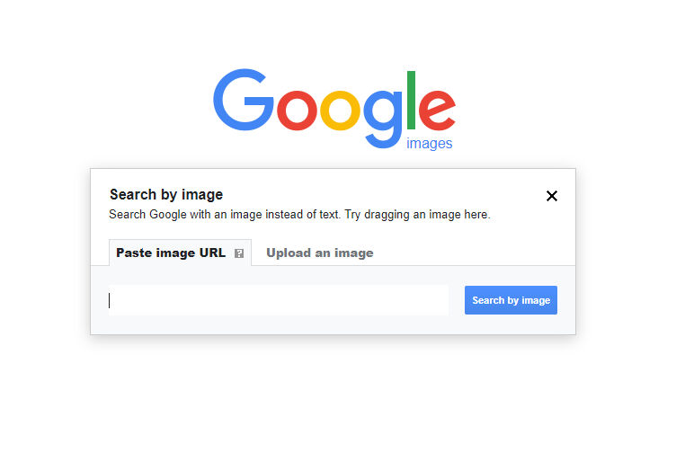
Kaynak: Google Görsel Arama
Arama yapacağımız görselin bağlantısını arama kutusuna yapıştırarak aramamızı yapıyoruz. Sonuçlar arasında aynı görselin olduğu bir sosyal medya hesabının bulunduğu görülüyor.

Kaynak: Google Görsel Arama Sonuçları

Kaynak: Britney Spears’ın Twitter Hesabı
Sonuç listesindeki sosyal medya hesabına tıklandığında hesabın mavi tik sahibi olduğu görülüyor. Yani, doğrulanmış bir hesap olduğu ve Britney Spears’a ait olduğu anlaşılıyor. Ayrıca kişi ile ilgili bir web bağlantısı, konum bilgisi, hesap oluşturma tarihi gibi bazı ek bilgiler de bulunmaktadır.

Hesapta paylaşılan tweetler incelendiğinde araştırmamıza konu olan görselin paylaşılan içerikler arasında yer aldığı görülmektedir.

Google tersine görsel arama özelliği zaman zaman yetersiz kalırken Yandex daha iyi sonuçlar üretebilmektedir (Toler, 2019). Google Images, Yandex Image Search, TinEye ve Bing’e ek olarak, RevEye Chrome extension kullanarak tarayıcıda bir görsel üzerinde mouse ile sağa tıklayıp aynı anda birden fazla platformda benzer görseller aranabilir.

Kaynak: RevEye Tersine Görsel Arama
Tersine görsel aramada arama motorlarının yetersiz kaldığı durumlar da vardır. Bu araçlar özellikle Twitter, Instagram, Facebook gibi sosyal ağlarda görsel bulma konusunda her zaman başarılı olamayabilmektedir (Zadrozny, 2020).
EXIF Verisi
Görsel doğrulamada uygulanacak bir diğer yöntem ise görsel üzerinde herhangi bir montaj olup olmadığının kontrol edilmesidir. Bunu araştırmak için görselin EXIF verileri kontrol edilebilir (Barot, t.y., s. 38; Silverman ve Tsubaki, t.y., s. 99). EXIF verilerini kontrol etmek için Foto Forensics, View and Remove EXIF Online, Jeffrey's Image Metadata Viewer gibi araçlar kullanılabilir.
Foto Forensics: Bu araç montajlı bir görseli/görüntüyü anlamak için kullanılabilir. Bir görüntünün EXIF’inin (üstverilerinin) bulunmasını ve görüntünün hata düzeyi analizinin (ELA) görülmesini sağlar. Bu araç aynı zamanda, kameranın modeli, görüntünün zaman damgası ve orijinal görüntünün boyutları gibi bilgileri de sağlayabilmektedir (Silverman ve Tsubaki, t.y., s. 99).
Örnek: Aşağıdaki fotoğrafın Dimetoka’daki camiye Yunanistan bayrağı asıldığını gösterdiği iddiasına bakalım.

Kaynak: Fotoğrafın Dimetoka’daki camiye Yunanistan bayrağı asıldığını gösterdiği iddiası
Türkiye’de medyada hızla yayılan bir iddiaya göre, Dimetoka’daki bir Osmanlı camisinin minaresine Yunanistan bayrağı asılmıştı. Ancak iddia doğru değildir. Görselin orijinali 2015 yılına ait olmakla birlikte, Yunanistan bayrağı da sonradan eklenmiştir. DHA tarafından servis edilen görsel, tersine görsel arama ile araştırıldığında, Yunanistan uzantılı Evros bölgesinden yayın yapan e-evros.gr adlı bir sitede yayınlanan 2015 tarihli bir içeriğe ulaşılmaktadır.
Fotoğrafa daha yakından bakıldığında, sonradan eklenen bayrağın ışık ve propozisyon açısından fotoğrafın kalanıyla uyumsuz olduğunu anlaşılabilmektedir. Montajlanan fotoğrafta bayrak epey emanet durmakta ve olağan açıda da değildir. Fotoforensics üzerinde yapılan analiz de görselin manipüle edildiğini doğrulamaktadır (Teyit, 2020, 1 Haziran).

Twitter, Facebook, Instagram gibi sosyal medya platformlarının çoğu (Flickr hariç), görseller platformlarına yüklendiğinde görsellerin içerdiği üstverilerin önemli bir kısmını temizlemektedir (Barot, t.y.). Dolayısıyla, bu tür platformlarda görsellerin EXIF verilerine ulaşmak zor olabilmektedir.
Benzerlik
Tersine görsel arama ve EXIF verilerinin kontrolünün yanı sıra, iki fotoğrafın aynı kişiye ait olma olasılığını söyleyen Face++ gibi araçlar da bulunmaktadır (Zadrozny, 2020). Bu araçlar özellikle, bir sosyal medya hesabında yer alan profil fotoğrafını araştırırken yardımcı olabilir.
Örnek: Fotoğraf BioNTech CEO’su Uğur Şahin ile ailesine mi ait?
Pfizer ile birlikte Covid-19 aşısı geliştiren Alman biyoteknoloji firması BioNTech’in CEO’su Uğur Şahin Türkiye’de doğdu ve 4 yaşındayken ailesiyle birlikte Almanya’ya göç etti. Altı kişilik bir aile portresi, Şahin ailesinin göç hikayesiyle eşleştirildi ve bu fotoğraf, Şahin ailesinin Almanya'daki ilk yıllarını gösterdiği iddiasıyla dünya çapında viral oldu.
Fotoğraf tersine görsel arama yöntemi ile aratıldığında, görselin aslında uzun süredir internette dolaşımda olduğu anlaşılıyordu. Eski paylaşımlar detaylı incelendiğinde ise fotoğrafın sanatçı Candida Höfer’in “Türken in Deutschland” isimli sergisinde yer aldığı ve Aksaray’dan Almanya’ya göçen bir aileyi gösterdiği ortaya çıktı. Uğur Şahin ve ailesi ise İskenderun’dan göçmüştü, neticede fotoğraf Şahin ailesine ait değildi (Teyit, 2020, 18 Kasım)
Konum Bilgisi
Fotoğrafın çekildiği yeri ve zamanı doğrulamaya yardımcı olması için araçlardaki plakalar, hava koşulları, önemli noktalar/kentsel simgeler, giyim tarzı, tabelalar/yazılar, tanınan bir dükkan/bina olup olmadığı, çekim yapılan arazi/ortam türü gibi ipuçları kullanılabilir (Barot, t.y.).
Tüm bunlar, fotoğraf ayrıntıları söz konusu olduğunda önemli bilgilerin elde edilmesine yardımcı olabilir ve Google Maps, Google Street View, Yandex Maps, Google Earth gibi araçlar yardımıyla kontrol edilebilirler (Silverman ve Tsubaki, t.y., s. 102). Konum doğrulama ile ilgili daha detaylı bilgi “Konum Doğrulama” başlığı altında yer almaktadır.
Video Doğrulama
Görsellerde olduğu gibi videolarda da kolaylıkla değişiklik yapılabilmektedir. Özellikle, kullanıcı üretimi videolar orijinal biçimlerinde görünmeyebilirler (Browne, t.y., s. 47). Videoların doğrulanmasında da tıpkı görsellerde olduğu gibi aşağıdaki beş soruya odaklanarak cevaplara ulaşmak mümkündür (Urbani, 2019):
- Videonun aslına mı bakıyorsunuz?
- Videoyu kimin çektiğini biliyor musunuz?
- Videonun nerede çekildiğini biliyor musunuz?
- Videonun ne zaman çekildiğini biliyor musunuz?
- Videonun neden çekildiğini biliyor musunuz?
Kaynak: Urbani, 2019 (Türkçe çeviri: Teyit, 2019)
İlgili soruların cevapları şekilde gösterildiği gibi aranabilir. Bu aşamada videoyla ilişkili üstveriler, orijinal kaynak, tarih ve konumla ilgili ayrıntıların elde edilmesine de yardımcı olabilir (Browne, t.y., s. 47).
Video doğrulama sürecinde ilk adım, videonun kökenini sorgulamaktır. Videolar genellikle açıklamalar, etiketler, yorumlar ve benzer tanımlayıcı bilgiler içerirler. Bu bilgiler kullanılarak çeşitli anahtar kelimeler oluşturulabilir. Bu anahtar kelimelerle arama yaparak, eşleşen en eski videolar bulunabilir. Örneğin, YouTube’da arama yapıyorsanız “Filtreler” menüsünden “yükleme tarihi” seçeneği seçilerek videolar buna göre sıralanabilir. Böylece eşleşen en eski videolara erişilebilir. Videodaki tanımlayıcı bilgiler yabancı bir dilde ise bu bilgilerin çevirisi için Google Translate gibi çeviri araçları kullanılabilir (Browne, t.y., s. 48).

Kaynak: YouTube Arama
Tersine görsel arama, videonun en eski sürümünü bulmak için de kullanılabilmektedir. Google Görseller ve TinEye gibi platformlarda videonun küçük resimleri ile tersine arama yaparak fotoğraf veya görsellerin ilk kullanıldığı versiyonlara ulaşılabilir (Browne, t.y., s. 49). Tersine görsel arama hakkında detaylı bilgi için bkz. “Görsel Doğrulama”.
InVID ise videoları karelere bölmeye, bu kareleri tersine görsel arama yöntemiyle birden fazla arama motorunda aramayı, kareleri ve görselleri yakınlaştırarak incelemeyi ve durağan görüntüleri analiz etmek için çeşitli filtreler uygulamayı sağlayan bir internet tarayıcı eklentisidir (Gregory, 2020). Arama çubuğuna ilgili bir bağlantı yapıştırıp arama yaptığınızda, videonun önizleme görüntüsü belirir. Bu görüntü tersine görsel arama araçları ile aranarak videonun başka nerede yayınlanmış olabileceği belirlenebilir (Lytvynenko, 2020).
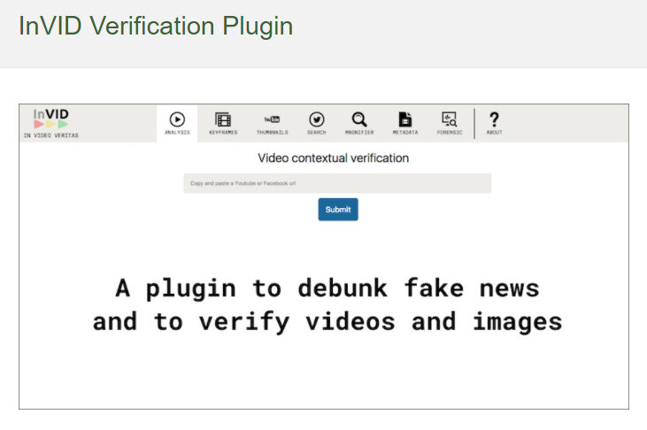
Kaynak: InVID Eklentisi
Video doğrulamada araştırılması gereken bir diğer unsur da videonun kaynağıdır. Bir diğer deyişle, videonun hangi kaynaktan geldiği ve kim tarafından platforma/platformlara yüklendiği araştırılabilir.
Öncelikle, videoyu yükleyen/paylaşan hesap hakkında hızlı bir araştırma yapılabilir. Bir sosyal medya hesabının nasıl araştırılacağına ilişkin ayrıntılar için bkz. “Sosyal Medya Hesabı Doğrulama”. Videoyu paylaşan kişinin/hesabın izleri ve çevrimiçi geçmişi araştırılırken aşağıdaki sorular da kullanılabilir (Browne, t.y., s. 49; Silverman ve Tsubaki, t.y., s. 101):
- Video açıklamaları tutarlı mı?
- Videoların tarihleri var mı?
- Hesaptaki videolarda bir logo varsa bu logo farklı videolarda aynı şekilde mi kullanılıyor?
- Yükleyici, haber kaynaklarındaki ve diğer YouTube hesaplarındaki videoları mı kullanıyor yoksa yalnızca kullanıcı üretimi içeriği mi yüklüyor?
- Video açıklamalarındaki video adlarında .AVI veya .MP4 gibi dosya uzantıları var mı? (Bu, videonun bir cihazla doğrudan yüklendiğini gösterebilir).
- YouTube videosunun açıklamasında “Uploaded via YouTube Capture” mı yazıyor? (Bu, videonun akıllı telefonla kaydedildiğini gösterebilir).
Kaynağın ilişkili olabilecek diğer hesaplarına ulaşmak da kaynak hakkında daha fazla bilgi edinmeye yardımcı olabilir. Bunun için şunlara bakmakta fayda vardır:
- Kullanıcı üretimi her içerik, URL’de görünen tekil bir kodla tanımlanır. Örneğin, Facebook ve YouTube’da bu kod, URL’deki “v=” ile sonraki “&” arasında bulunmaktadır. Bu kodu bulmak için Twitter, Facebook gibi platformlara bakarak bağlantılı başka bir hesap olup olmadığı kontrol edilebilir.
- Yükleyicinin video profili, kendisine ait başka bir adres veya hesap bilgisi olup olmadığını bulmak için kontrol edilebilir.
- İlişkili hesapların ne kadar süredir aktif olduğu ve bu hesapların yükleyicinin son konumu, faaliyetleri, güvenilirliği, eğilimleri veya gündemi gibi belirli bilgileri içerip içermediği kontrol edilebilir.
Tüm bu soruların cevapları, kaynağın güvenilirliği hakkında genel bir fikir verecektir (Browne, t.y., s. 50; Silverman ve Tsubaki, t.y., s. 100). Video doğrulamada videonun içeriğinin kontrol edilmesi de son derece önemlidir. Bu amaçla öncelikle videonun nerede çekildiği ve kaydedildiği ile ilgili konum bilgileri aranabilir. Bunun için konum doğrulama başlığı altında belirtilen ipuçlarına başvurulabilir (bkz. “Konum Doğrulama”).
Video içeriği ile ilgili incelenebilecek bir diğer nokta ise tarih bilgisidir. Eylem, siyasi miting gibi planlanmış bir etkinliğin videolarının tarihlerini doğrulamak daha kolay olabilmektedir. Bu tür olayların başka fotoğraf ve videoları olabileceğinden bunları karşılaştırarak destekleyici bilgiler elde etmek mümkündür. Ancak, daha belirsiz videoların tarihlerini doğrulamak epey zor olabilmektedir. Hem videolar hem de görseller için tarih doğrulama işlemi sırasında aşağıdaki bilgiler kontrol edilebilir (Browne, t.y., s. 52-53; Silverman ve Tsubaki, t.y., s. 100-101):
- O gün yaşanan olaylarla ilgili haberler farklı haber kaynaklarından aranabilir.
- Fotoğraf ve videolarda tarih veya saati belirlemek için saat, televizyon ekranları, gazete sayfaları gibi unsurlar kontrol edilebilir.
- YouTube, Google, TinEye gibi araç ve platformlar aracılığıyla görsel ve video araması yapılabilmektedir. Böylece mevcut içeriğin daha önce farklı platformlarda paylaşılıp paylaşılmadığı görülebilmektedir. Ancak bu noktada YouTube’un yükleme başlangıç zamanı olarak Pasifik Saat Dilimi'ni (GMT-8) temel aldığını göz önünde bulundurmak gerekmektedir. Çünkü, saat farkından dolayı bu durum yanıltıcı olabilir.
- Videodaki olayın gerçekleştiği yer ve o günün hava durumu kontrol edilebilir. Aynı olayla ilgili hava durumu tahminlerinin ve diğer gönderilerin benzer olup olmadığı karşılaştırılabilir. Bu amaçla arama yapmak için Wolfram Alpha arama motoru kullanılabilir.
Örnek: “8 Mart 2011’de ABD Kaliforniya’da hava nasıldı?”

Kaynak: Wolfram Alpha Arama

Kaynak: Wolfram Alpha Arama Sonucu
Elde edilen tüm ipuçları ve kanıtlar birleştirilerek, mantıklı olmayan bir şey olup olmadığı değerlendirilebilir. Öte yandan, videolarda anlamsız bir şey olduğunda video düzenleme yazılımları (VLC Media Player, Avidemux Video Editor, Vegas Pro vb.) üzerinden de bazı teknik incelemeler yapılabilir (Browne, t.y., s. 52).
Deepfake
Deepfakes, bir kişinin yüzünün, sesinin veya eylemlerinin gerçekçi simülasyonlarının oluşturulmasına izin veren yeni görsel-işitsel manipülasyon biçimleridir (Gregory, 2020). Başka bir deyişle, yapay zekȃ teknolojilerinin görüntü ve videolar üzerinde yapılan manipülasyonlara dahil olması deepfake olarak adlandırılmaktadır. Deepfake, temel olarak Çekişmeli Üretici Ağlar (GAN) adı verilen bir makine öğrenme tekniğine dayanmaktadır. GAN, bir görseli tanımak için bir dizi algoritma kullanarak kendini eğitmekte ve bu sayede görselin gerçek özelliklerini öğrenerek sahte görseller üretebilir hale gelmektedir (Metz, 2017; Schwartz, 2018; Gregory, 2020).
Deepfake, insanların söylemedikleri veya yapmadıkları bir şeyi yapmış gibi göstererek onlara ciddi zarar verme potansiyeline sahiptir. Örneğin, rıza dışı cinsel görüntüler ve videolar oluşturmak için bir kişinin yüzünü kullanabilir. Ek olarak, deepfake’in dezenformasyon için kullanılma potansiyeli de endişe yaratmaktadır (Gregory, 2020).
Deepfake olup olmadığı konusunda özellikle bakılması gereken detaylar şunlardır (Gregory, 2020):
- Alın/saç çizgisinde belirgin kusurlar veya sabit yüz hareketi
- Dişlerde detay eksikliği
- Son derece pürüzsüz cilt
- Göz kırpma hareketinin olmaması
- Konuşmacıda anlık hareketlerin, jest ve mimiklerin bulunmaması
- Bir kişinin başını çevirdiğinde veya hareket ettirdiğinde oluşan tutarsızlıklar/bozukluklar
Deepfake’i tespit etmek her zaman kolay olmasa da belirli ipuçları ve görsel/video doğrulama yöntemleri (benzerlik, tersine görsel arama) kullanılarak deepfake olup olmadığı anlaşılabilir (bkz. “Görsel Doğrulama” ve “Video Doğrulama”) (Gregory, 2020; Marconi ve Daldrup, 2018).
Örnek: Bozuk asfalt yol görüntüleri İstanbul'dan değil Çin’den
Şiddetli bir yağmurun İstanbul’u etkisi altına almasının ardından, çeşitli araba ve otobüslerin bozuk asfalt yoldaki deliklerden geçtiği anları gösteren video, İstanbul’dan olduğu iddiasıyla dolaşıma girdi.
Videonun sağ alt köşesinde görülen Mandarin alfabesindeki logoyu Yandex görsel yardımıyla metin haline getirip, kelimeyi Google’da aradığımızda videonun 15 Haziran 2020’de Bilibili isimli Çin video platformunda paylaşıldığı görülüyor. Videoda görünen tabelalar ve geçen araçlara ait detaylar da videonun Çin’in Guangdong bölgesinde çekildiğini doğruluyor. Aynı video daha önce dünyadaki farklı şehirlerle de ilişkilendirilmiş ve bu iddialar çeşitli doğrulama platformları tarafından incelenmiş (Teyit, 2021, 25 Ocak)
Konum Doğrulama
Doğrulama sürecinde incelenebilecek bir diğer unsur da içeriğin konum bilgisidir. Bunun için öncelikle içeriğin konum bilgisi içerip içermediği kontrol edilmelidir. Flickr, Picasa, Instagram, Twitter gibi platformlar kullanıcılarına konum ekleme seçeneği sunmaktadır. İçeriğin konum bilgisi, mevcut uydu fotoğrafları ve otomatik konum bilgisi içeren fotoğraflar ile karşılaştırılarak doğrulanmaya çalışılabilir (Silverman ve Tsubaki, t.y., s. 101). Bunun için Google Haritalar, Google Sokak Görünümü, Yandex Haritalar, Bing Haritalar, Google Earth, Wikimapia, Geofeedia ve benzer platformlar kullanılabilir. Karşılaştırma yaparken, doğrulama için aşağıdaki özellikler kontrol edilebilir (Silverman ve Tsubaki, t.y., s. 101):
- Sokak detayları (binalardaki işaret ve yazılar, sokak levhaları/yön işaretleri, ilan panoları vb.)
- Manzaralar (dağ sıraları, ağaç hatları, kayalıklar, nehirler vb.)
- Binalar ve kentsel simgeler (kiliseler, minareler, stadyumlar, köprüler vb.)
- Hava koşulları (örneğin, gün ışığı veya gölge gibi detaylar yaklaşık olarak saati belirlemeye yardımcı olabilir)
- Araç plakaları
- Bayraklar
- Giysiler
- Konuşulan dil (özellikle videolarda, aksan ve lehçelerin coğrafi konumla uyumluluğu kontrol edilebilir)
Binalardaki işaretler/yazılar, sokak levhaları, yön işaretleri, ilan panoları gibi sokak detaylarında yabancı dil kullanılıyorsa, bunlar Google Translate ve benzeri çeviri araçları kullanılarak tercüme edilebilir (Silverman ve Tsubaki, t.y., s. 101).
Google Sokaka Görünümü veya Google Haritalarda yer alan fotoğraflar içerikteki ayrıntıları, otomatik konum bilgisine sahip fotoğraflarla eşleştirmek için kullanılabilir (Higgins, 2015; Silverman ve Tsubaki, t.y., s. 101).
Örnek: Diyelim ki rastladığımız bir haberde İtalya’da Kolezyum yakınlarındaki Celimontana Meydanı’nda meydana gelen bir olayla ilgili olduğu iddia edilen bir görsel veya video var. Haberdeki konum bilgisini kontrol etmek istediğimizde Google Street View’i kullanabiliriz.
İlk olarak, Google Haritalarda “Piazza Celimontana” araması yaparız:

Kaynak: Google Haritalarda “Piazza Celimontana, Roma, Italy” araması

Kaynak: Google Haritalarda “Piazza Celimontana, Roma, Italy” araması
Harita görünümünde Piazza Celimontana’nın Kolezyum’a yakın olduğu görülebilir. Görünümü yakınlaştırarak sokak detayları (tanınmış binalar, bayraklar gibi) incelenebilir.

Kaynak: “Piazza Celimontana, Roma, Italy”e ait Google Sokak Görünümü
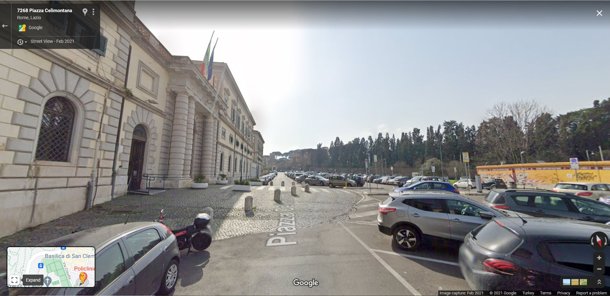
Kaynak: “Piazza Celimontana, Roma, Italy”e ait Google Sokak Görünümü
Google Earth ise geçmiş uydu görüntülerini de sağlamaktadır. Bu nedenle, Google Earth'ün arazi görünümü eski fotoğraflar ve videolar için de kullanılabilir (Silverman ve Tsubaki, t.y., s. 101).

Kaynak: “Piazza Celimontana, Roma, Italy” için Google Earth araması

Kaynak: “Piazza Celimontana, Roma, Italy”e ait Google Earth görünümü
Twitter, Facebook ve Instagram gibi sosyal ağlar, kullanıcılara konum ekleme seçeneği sunsa da, genellikle buna yönelik üstverileri silmektedirler (Flickr hariç). Bunun yerine, görüntüyü yükleyen mobil cihazdan GPS verilerini belirlemek için Geofeedia gibi platformlardan yararlanılabilir (Silverman ve Tsubaki, t.y., s. 98-99).
Bu tekniklerin ve araçların kullanılmasına ek olarak, resmi haber kuruluşlarının benzer görseller yayınlayıp yayınlamadığı veya olayın gerçekleştiği yerden başkaları tarafından sosyal medyaya yüklenen başka görsellerin olup olmadığı da kontrol edilebilir. Böylece olayın geldiği noktayı farklı açılardan görmek ve görüntülerin güvenilirliğini belirlemek mümkün olabilir (Barot, t.y., s. 40).
Sosyal Medya Hesabı Doğrulama
Sosyal medya hesaplarını araştırmak için kullanılabilecek bazı yaklaşımlar ve araçlar vardır.
Kullanıcı adı ve kimlik
Sosyal medyadaki bir kullanıcı hesabının gerçek olup olmadığını araştırırken önce hesabın mavi tik sahibi olup olmadığı kontrol edilir. Hesap adının yanında mavi tik varsa bu, hesabın ilgili platform (Facebook, Twitter, Instagram gibi) tarafından onaylandığı anlamına gelmektedir (Silverman ve Tsubaki, t.y., s. 99-100). Mouse ile mavi tik işaretinin üzerine geldiğinizde, bunun doğrulanmış bir hesap olduğuna dair bir açıklama görünecektir. Eğer böyle bir açıklama görünmüyorsa mavi tik işareti oraya Photoshop ile eklenmiş olabilir (Wardle, t.y., s. 28). Sosyal medya hesaplarının onaylanması için hesabın özgün, benzersiz, etkili ve dikkat çekici olması gibi platformlar tarafından aranan bazı kriterler bulunmaktadır (Instagram help center, 2021; Twitter help center, 2021). Hesabınızın hangi platformda onaylanmasını istiyorsanız ilgili platformun belirttiği kriterleri inceleyerek başvuruda bulunabilirsiniz.

Kaynak: Onaylanmış Hesap Örneği
Bazı kişiler her platformda farklı kullanıcı adı kullanırken, bazı kullanıcılar farklı platformlarda aynı kullanıcı adını tercih edebilmektedir. Bu nedenle, araştırılan kullanıcı adını birkaç farklı siteden kontrol etmek gerekebilir (Zadrozny, 2020). Kullanıcı adı ve kimlik araştırması için Google, Namechk, Namecheckr, Spokeo, Webmii, LinkedIn, haveibeenpwned.com, Dehashed.com gibi araç ve platformlar kullanılabilir.
Örnek: Diyelim ki karşılaştığımız bir sosyal medya hesabının Britney Spears’a ait olup olmadığını ve Britney Spears’ın başka hesapları olup olmadığını araştırıyoruz.
Google: Kullanıcı adları veya kişisel kimlik bilgileri ilk önce Google’da aranabilir. Google tarafından dizinlenen bir kullanıcı hakkında herhangi bir bilgi varsa, bu bilgi o kullanıcının izinin sürülmesine yardımcı olabilir.
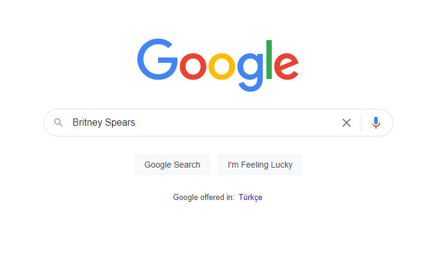
Kaynak: Google Arama
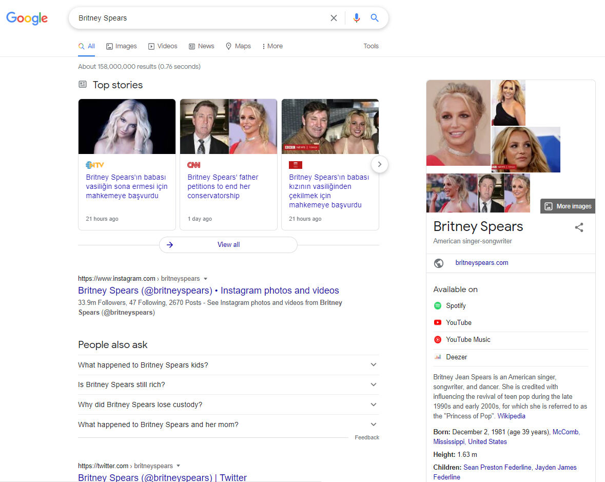
Namechk ve Namecheckr: Bir kullanıcı adı veya e-posta bilgisinin farklı platformlarda yer alıp almadığını araştırmak için kullanılabilir (Zadrozny, 2020).
Örnek: Britney Spears’ın Instagram hesabında kullandığı “britneyspears” kullanıcı adıyla Namechk ve Namecheckr platformlarında bir arama yapalım:

Kaynak: “britneyspears” kullanıcı adıyla Namechk araması

Kaynak: “britneyspears” kullanıcı adıyla yapılan Namechk arama sonuçları
“britneyspears” kullanıcı adını kullanan platformlar, arama sonucunda “kayıtlı” (registered) (kırmızı renk) veya “kullanılamıyor” (unavailable) olarak görüntülenmektedir. Böylece aranan kişinin ilgili diğer sosyal medya hesaplarını kontrol edebilmek mümkün olmaktadır.

Kaynak: “britneyspears” kullanıcı adıyla yapılan Namecheckr arama sonuçları
Spokeo: Bu araç yardımıyla bir kişiyi isim, e-posta, telefon veya kullanıcı adına göre aramak mümkündür (Verification handbook, t.y.).
Örnek: Britney Spears adıyla Spokeo’da bir arama yapalım:

Kaynak: Britney Spears adıyla yapılan Spokeo araması

Kaynak: Britney Spears adıyla yapılan Spokeo arama sonuçları
Arama sonucunda Britney Spears adlı kişilerin coğrafi bölgeleri, adresleri, telefon numaraları, e-postaları ve iletişimde oldukları diğer bazı kişilerin isimleri gibi bilgilere ulaşmak mümkündür.
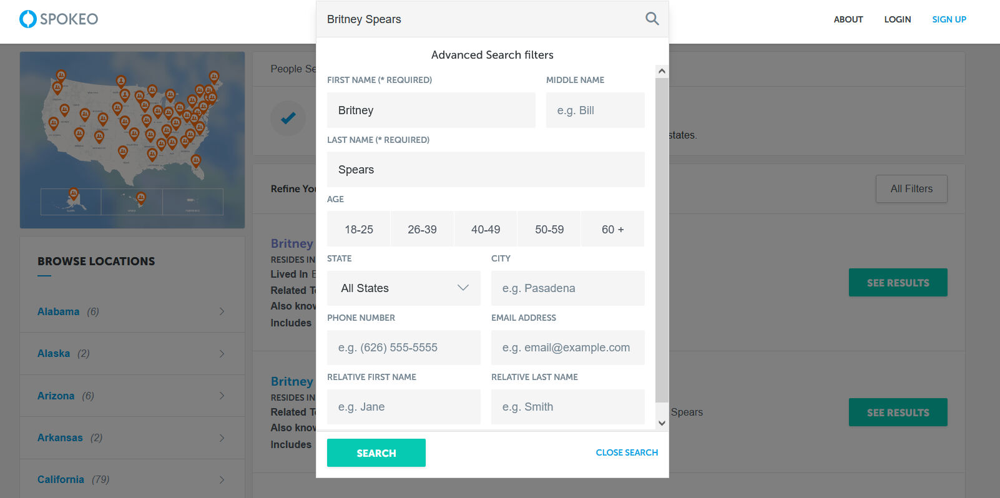
Kaynak: Britney Spears adıyla yapılan Spokeo Gelişmiş Arama
Gerekli bilgiler doğrultusunda gelişmiş arama seçeneği kullanılarak Spokeo’daki aramalar (yaş, eyalet, ülke gibi) filtrelenebilir.
Webmii: Bir kişinin adıyla onunla ilgili web bağlantıları aranabilir (Verification handbook, t.y.).
Örnek: Webmii’de Britney Spears adıyla arama yaptığımızda, kişinin web’de varlık gösterdiği platformların bağlantı adreslerini görmek mümkündür.

Kaynak: Britney Spears adıyla yapılan Webmii araması

Kaynak: Britney Spears adıyla yapılan Webmii arama sonuçları
LinkedIn: LinkedIn’deki iş geçmişine ve bağlantılarına bakarak bir kişinin kimliği ve hikȃyesi hakkında fikir edinilebilir (Verification handbook, t.y.).
Örnek: 2021 Nobel Barış Ödülü kazananlarından Maria Ressa’nın kimliği hakkında bilgi almak ve profesyonel iş bağlantılarını görmek için LinkedIn’de bir arama yapalım:

Kaynak: LinkedIn

Kaynak: Maria Ressa adıyla yapılan LinkedIn araması
Arama sonuçları, aynı ada sahip birden fazla hesap olduğunu göstermektedir. Bu hesaplardan hangisinin gazeteci Maria Ressa hakkında ipuçları içerdiği tespit edilebilir.

Arama sonuçlarında ilk sırada yer alan hesaba tıklandığında, gazeteci Maria Ressa ile ilgili ülke, dil, etkinlikler gibi bilgilerin kişinin bilgileriyle uyumlu olduğu görülmektedir.

Kaynak: Maria Ressa’nın LinkedIn hesabı
Bunlara ek olarak haveibeenpwned.com ve Dehashed.com, kullanıcı bilgilerini içeren veri ihlallerini araştırmak ve bir e-posta adresini veya telefon numarasını doğrulamak için kullanılabilir. Ayrıca, Pipl ve Skopenow gibi ücretli hizmet veren ve Amerika Birleşik Devletleri’nde yaşayan kişileri aramak için kullanılan platformlar da vardır (Zadrozny, 2020).
İlişkiler
Bir kişinin çevrimiçi ortamda kimlerle etkileşime girdiğine bakarak hayatı ve eğilimleri hakkında pek çok şey öğrenmek mümkündür. Bu amaçla, bir hesabın en eski takipçilerine ve arkadaşlarına bakılabilir (Zadrozny, 2020). TweetBeaver adlı aracı kullanarak büyük hesaplar arasındaki bağlantıları aramak, daha küçük hesapların akışını (zaman tünelini) ve beğenilerini incelemek mümkündür. TweetBeaver’ı kullanabilmek çin bir Twitter hesabınızın olması ve oturum açmanız gerekmektedir.
Örnek: Britney Spears’a ait olduğu düşünülen Twitter hesabındaki kullanıcı adının üzerinden gidelim. Bu hesap sahibinin, Britney Spears’ın kız kardeşi Jamie Lynn Spears’ın Twitter hesabı ile takipleşme durumunu TweetBeaver üzerinden kontrol edebiliriz.

Source: TweetBeaver
TweetBeaver’da yer alan farklı seçenekler içerisinden iki hesabın takipleşme durumu seçilir. Daha sonra kontrol edilecek hesapların adları ilgili alanlara yazılarak sorgulanır.

Kaynak: TweetBeaver ile Britney Spears ve kız kardeşinin Twitter’da takipleşme durumunu takip etme
Arama sonucunda iki hesabın birbirini takip ettiği görülmektedir.
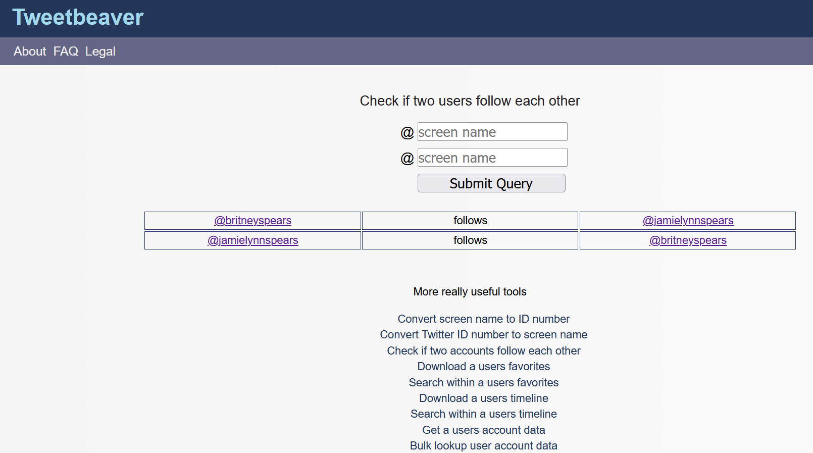
Kaynak: Britney Spears ve kız kardeşinin Twitter’da birbirlerini takip durumları
Ayrıca Twitter Gelişmiş Arama (Twitter Advanced Search), bir hesabın ilk tweetlerine ulaşmak veya belirli bir zaman diliminde gönderilen tweetleri incelemek için kullanılabilir. Twitter Gelişmiş Arama’nın filtreleme özelliklerini (kelime, yıl vb.) kullanarak çeşitli aramalar yapmak mümkündür.

Kaynak: Twitter Gelişmiş Arama
Kullanıcılar bazen sosyal medyadaki gönderilerini (tweet’ler, Facebook gönderileri gibi) silebilmektedir. Şüpheli içerik barındıran paylaşımlar Wayback Machine, archive.today gibi arşiv hizmeti veren sitelerde daha önce kaydedilmişse, silinen gönderilere bu siteler üzerinden ulaşılabilmektedir.
Fotoğraflar
Profil fotoğrafları, bir sosyal medya hesabını araştırmaya ve hesap sahibinin kimliğini doğrulamaya yardımcı olan bir başka unsurdur. Profil fotoğrafı ile tersine görsel arama yapılarak çeşitli ipuçları elde edilebilir. Görsel arama ile ilgili daha detaylı bilgi için bkz. “Görsel Doğrulama”.
İnternet Sitelerinin Araştırılması
Web siteleri, medya manipülasyonu ile uğraşan kişiler tarafından gelir elde etmek, kişisel bilgi toplamak (e-posta ve diğer), güvenli bir çevrimiçi alan oluşturmak gibi amaçlarla kullanılabilmektedir (Silverman, 2020a). Ayrıca, web sitelerinde yer alan içerikler, sosyal medyada paylaşılan şüpheli içeriklerle ilgili olabilirler. Bu nedenle, web sitelerinde yer alan metin, görsel, video ve benzeri içeriklerin doğrulanması gerekebilmektedir.
Sosyal medya platformlarında paylaşılan içeriklerin silinmesine benzer bir durum web sitelerinde de yaşanmaktadır. Bir web sitesindeki herhangi bir içeriğin (metin, görsel, video veya tümü) bağlantısının silinmesi sonucunda o içerik erişilemez hale gelmektedir. Web sitelerine verilen bağlantılar veya bu sitelerdeki içerikler Wayback Machine, archive.today gibi arşiv hizmeti veren sitelerde kayıtlı ise silinen içeriklere bu siteler üzerinden ulaşılabilir. Arşiv hizmeti veren siteler, yalnızca kanıt niteliğinde olabilecek sayfalara/içeriklere erişim sağlamakla kalmaz, aynı zamanda yanlış bilgi yayan sitelere/hesaplara doğrudan bağlantı verilmesini de engeller. Bu araçlar sayesinde, bir web sitesinin zaman içindeki değişimini izlemek de mümkündür (Silverman, 2020a). Wayback Machine, belirli bir sayfanın farklı zamanlarda kaydedilen farklı sürümlerini karşılaştırarak farklılıkları izlemenize olanak tanır (Graham, 2021).

Web sitesini doğrulamanın ilk adımı, web sitesinin içeriği hakkında fikir sahibi olmaktır (Silverman, 2020a).
- Sitenin neyle ilgili olduğunu anlamak için siteyi kimin yönettiği, sitenin amacı ve sitedeki diğer açıklamaların yer alabileceği “Hakkında” bölümüne bakılabilir. Sitede herhangi bir açıklama bulunmaması site hakkında şüpheli bir işaret olarak değerlendirilebilir. Bu, sitenin aceleyle oluşturulmuş olabileceği veya sahiplik ve yayın durumuyla ilgili bazı bilgilerin gizlendiği izlenimi yaratmaktadır. Ayrıca, “Hakkında” bölümünde herhangi bir kişi, tüzel kişi veya şirket adının olup olmadığı, varsa bunların sitenin diğer bölümlerinde de geçip geçmediği kontrol edilebilir. İsimler geçiyorsa, bu bilgilerin farklı sayfalarda tutarlı olup olmadığı kontrol edilebilir.
- Web sitesinde yayınlanan makaleler varsa, bunların yazar bilgisi ve bağlantı adresi içerip içermediğine bakılabilir. Tıklanabilir bağlantılar varsa yazarın biyografisine, sosyal medya hesaplarına veya yazar hakkında bilgi içeren diğer ilgili sayfalara yönlendirilip yönlendirilmediği kontrol edilebilir.
- Site ile ilişkili sosyal medya hesaplarına bağlantı olup olmadığı kontrol edilebilir. Bu bağlantılar genellikle Facebook, Twitter, Instagram gibi sosyal medya platformlarının ikonları şeklinde bulunur. Mouse ile bu simgenin üzerine gelindiğinde, tarayıcının sol alt köşesinde hangi bağlantı adresine yönlendirdiği görülebilir. Aceleyle oluşturulan web sitelerine ait sosyal medya hesaplarının kimlikleri tam olarak doldurulmadığı için bağlantı kullanıcı adı olmadan “facebook.com/” olarak yayınlanmaktadır.
- Sitede sunulan içeriğin (metin, görsel ve benzeri) özgünlüğünün kontrol edilebilmesi için içeriğin başka bir yerden kopyalanıp kopyalanmadığı, sitede yanlış/yanıltıcı bilgi paylaşılıp paylaşılmadığı veya belli bir gündemi/konuyu öne çıkarma çabası olup olmadığı incelenebilir.
Web sitesi hakkında kontrol edilebilecek bir diğer şey, alan adı ve oluşturulma tarihi gibi siteyle ilgili bazı temel kayıt bilgileridir. Bazı durumlarda alan adını tescil ettirmek için ödeme yapan kişi veya kurumlar hakkında bilgi almak mümkündür. Bunun için who.is, whois.net or ICANN LookUp gibi platformlar kullanılabilir. Alan adı aramaları için DomainBigData adlı araç da kullanılabilir. Alan adı aramanız kayıt şirketinin bilgilerini “Kayıt gizli”, “WhoisGuard Protected” veya “Perfect Privacy LLC” olarak gösteriyorsa bu, alan adının gizliliğinin korunduğunu göstermektedir. Öte yandan, alan adının son kayıt tarihi, kayıt süresinin ne zaman sona ereceği, sitenin barındırıldığı sunucunun IP adresi gibi bilgiler görülebilmektedir (Silverman, 2020a).
Örnek: “The Information” adlı sitenin alan adı bilgilerine bakalım:

Kaynak: “The Information” adlı web sitesi ile ilgili who.is üzerinde yapılan arama
Arama sonucunda, kayıtlı site sahibine ait bilgilerinin bulunduğu bölümde “Perfect Privacy LLC” ifadesi yer almaktadır. Bu durumda, alan adının gizliliğinin korunduğu anlaşılmaktadır.


Kaynak: “The Information” adlı web sitesi ile ilgili who.is üzerinde yapılan arama sonucu
Web sitelerinin doğrulanmasında daha derinlemesine analiz için içerik ve kaynağın yanı sıra sitenin kaynak kodu da incelenebilir (Silverman, 2020a).
Örnek: Referans verilen rapor Türkiye’nin yangına müdaheledeki başarısını mı gösteriyor?
2021 yazı Akdeniz havzası için oldukça zorlayıcı geçti, özellikle de Türkiye için. İklim krizinin de etkisiyle kontrol altına alması gittikçe zorlaşan orman yangınlarına müdahale devam ederken ortaya atılan iddia şöyleydi: Avrupa merkezli bir kurum tarafından yayınlanan raporlara göre Türkiye yangınla mücadelede örnek teşkil eden bir performans sergiliyordu.
Haber için seçilen başlık ve görsel kaynak olarak “Avrupalı” bir kuruma atıfta bulunurken, haber metninde iddianın Avrupa Orman Yangını Bilgi Sistemi 2020 raporuna dayandırıldığı belirtilmişti.
Ancak raporda Türkiye'nin yangınlara müdahalede hızlı olduğunu gösteren bir veri olmadığı gibi “yangın başına düşen alan” şeklinde bir sıralama da yer almıyor. Aksine, raporda Türkiye’nin Avrupa, Ortadoğu ve Kuzey Afrika’da 2020 yılında orman yangınlarından en çok alan kaybı olan dördüncü ülke olduğu görülüyor (Teyit, 3 Ağustos 2021).
Botlar and Troller
Botlar ve troller hakkında genel bilgiler Modül 4'te ele alınmaktadır. Bu modül ise bot ve trollerin nasıl tespit edilebileceğine dair bilgiler içermektedir.
Bot Nedir?
“Bot, insanlar tarafından kendisine atanan görevleri otomatik olarak gerçekleştirebilen bir yazılım uygulamasıdır.” (Wild ve Godart, 2020). Kamusal alanlardaki tartışmalarda adı sıkça anılan ve Facebook, Twitter, LinkedIn gibi sosyal ağlarda aktif olan botlar, sosyal botlardır. Bu botlar, sosyal ağlarda belirli ideolojik mesajları yaymak ve belli bir konunun, kişinin, içeriğin veya etiketin (hashtag) önemli sayıda destekçisi olduğu izlenimi yaratmak için kullanılabilirler. Sosyal medya botları genellikle üç ana kategori altında bulunur (Wild ve Godart, 2020):
- Zamanlanmış bot
- İzleyici bot
- Güçlendirici bot
Dezenformasyon bağlamında sıklıkla amacı internette kamuoyunu şekillendirmek olan güçlendirici botlara rastlanmaktadır. Bu tür botlar bireylerin veya kuruluşların gerçekte olduğundan daha fazla takipçiye sahip olduğunu göstermek amacıyla da kullanılabilmektedir. Güçlendirici botlar, etiketlerin yayılmasını etkilemek, bir bağlantıyı veya görsel içeriği yaymak, spam göndermek, çevrimiçi olarak birinin itibarını zedelemek veya o kişinin tartışmalı veya yoğun olarak eleştirilen biri gibi görünmesini sağlamak için de kullanılabilir (Wild ve Godart, 2020).
Bunlara ek olarak, bazen otomatik bazen de gerçek kişiler tarafından yönetilen, doğal ve yapay faaliyetlerin bir karışımını sergileyen sosyal medya hesaplarına rastlamak mümkündür. Bu tür hesaplara cyborg da denilmektedir (Wild ve Godart, 2020).
Botlar Nasıl Tespit Edilebilir?
Bot satın almak ve oluşturmak nispeten kolay olsa da, insan benzeri davranışlar sergileyen sofistike bir bot ağı oluşturmak ve sürdürmek daha zordur (Wild ve Godart, 2020). Bir hesabın bot olup olmadığını belirlemeye yardımcı olmak için geliştirilmiş bazı araçlar vardır. Ancak bir araçtan alınan puanın net bir sonucu temsil etmediği ve bunun bir haberin/çıkarımın dayandığı tek nokta olmaması gerektiği unutulmamalıdır. Bu araçlar iyi bir başlangıç noktası olabilirler. Ancak, botları yüzde yüz doğrulukla tespit edebilmek için evrensel bir kriter bulunmamakla birlikte, bir şeyin neye göre bot olarak sınıflandırılacağı konusunda da henüz net bir görüş birliği yoktur (Wild ve Godart, 2020).
Botometer: Botometer, Indiana University Observatory on Social Media and the Network Science Institute’un ortak projesi olarak başlamıştır. “Botometer (eski adıyla BotOrNot), bir Twitter hesabının etkinliğini kontrol eder ve ona bir puan verir. Daha yüksek puanlar, daha fazla bot benzeri aktivite anlamına gelmektedir.” (Botometer, t.y.).

Kaynak: Botometer
Bot Sentinel: ABD’de şüpheli davranışlarda bulunan Twitter hesaplarının halka açık bir veritabanını sağlamaktadır. Bu veritabanı ile Twitter kurallarını sürekli ihlal eden hesapların bir araya getirilmesi ve “sorunlu” olarak tanımlanması amaçlanmaktadır (Bot Sentinel, 2021; Wild ve Godart, 2020).
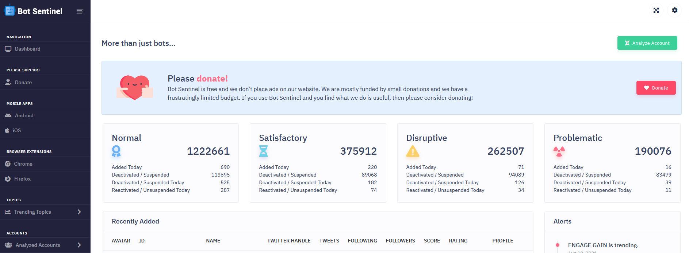
Kaynak: Bot Sentinel
İncelenmek üzere yeni eklenen hesaplar ve bunların şüpheli olup olmadığı Bot Sentinel web sitesinde görülebilir.

Kaynak: Bot Sentinel’e yeni eklenen hesaplar ve bunlara ait veriler
Bot tespitinde bu araçlardan yararlanmanın yanı sıra sosyal ağlardaki yapay hareketlerin izlenmesi de önemlidir. Twitter veya diğer sosyal ağlarda otomatik davranış sergileyen şüpheli hesaplardan tipik sinyalleri yakalamak için aşağıdaki noktalar incelenebilir (Wild ve Godart, 2020):
- Gerçek olmayan profil resmi: Bot hesapları ve yapay harketleri tespit etmek için profil fotoğrafı ile ilgili şu ipuçları dikkate alınabilir (Wild ve Godart, 2020):
- Herhangi bir profil fotoğrafının olmaması
- Profilde çalıntı bir fotoğraf kullanmak
- Profil resmi olarak çizgi film karakterlerini veya hayvanları kullanmak
- Otomatik olarak oluşturulmuş kullanıcı adları: Twitter’daki tüm kullanıcı adları tekildir. Bu nedenle, botlar henüz kullanılmamış kullanıcı adları oluşturmak için genellikle şu kriterleri kullanırlar (Wild ve Godart, 2020):
|
“Kullanıcı adı ve ardından dört basamaklı bir sayı” |
“(a-zA-Z ve 0-9) içeren ve rastgele on iki karakterden oluşan kullanıcı adı” |
“Twitter tarafından oluşturulmuş varsayılan (default) kullanıcı adının kullanıldığını gösteren rastgele sekiz basamaklı bir sayının ardından gelen herhangi bir ad” |
|
hero_2345 hero_3476 hero_9812 |
fH23pGr50LaX 7At35kd89QwS Xr16xHW4n6DK |
George89567438 Mary91827364 Peter25384128 |
- Hesap yaşına uymayan hareketler: Aşağıdaki durumlarla karşılaşıldığında hesapla ilgili şüphelenmek gerekebilir. Bu durumda, hesabın tweet hareketlerini daha yakından incelemek gerekir (Wild ve Godart, 2020):
- Yeni oluşturulan bir hesabın çok sayıda takipçisi varsa veya
- Yeni oluşturulan bir hesap kısa sürede çok fazla sayıda tweet attıysa veya
- Eski bir hesap çok aktif olup çok az takipçisi varsa
- Şüpheli tweet örüntüleri: İnsanların tweet attıkları gün ve saatlerle ilgili bazı tercihleri olabilir. Ancak, bir kişinin belirli günlerde sürekli paylaşım yapıp diğer günlerde sessiz kalması pek olası değildir (Wild ve Godart, 2020).
Troll Nedir?
“Troll, çevrimiçi bir toplulukta veya sosyal ağda kışkırtıcı veya konu dışı gönderiler göndererek kasıtlı olarak çevrimiçi çatışma başlatan veya diğer kullanıcıları rahatsız etmek ve bölünmeler yaratmak için rahatsız eden kişidir. Amaçları, başkalarını duygusal bir tepki vermeye kışkırtmak ve tartışmaları rayından çıkarmaktır.” (DFRLab, 2018).
Troller Nasıl Tespit Edilebilir?
Troller genellikle ideolojik açıdan uyumlu oldukları yalan haberleri destekleyen ve savunan, insanlarla tartışan, diğer kullanıcılara ve tanınmış kişilere hakaret içeren yorumlar gönderen, belirli fikirlerden hoşlanmayan ve bu fikirleri yayınlayanları korkutan bir profil sergilerler (The Center for Information Technology and Society, t.y.).
Bot hesapların nasıl tespit edileceği ile ilgili adımlar, troll olduğundan şüphelenilen hesaplara da uygulanabilir. Bu bağlamda, kullanılan profil fotoğrafı, takipçi sayısı, hesabın açılma tarihi, paylaşım kalıpları gibi bilgiler bir hesabın troll olup olmadığı konusunda fikir verebilir.
Örnek: Ne kadar etkili olabilirler?
Bot ve troll hesaplar sıklıkla aktivistleri karalamak ve iktidarı eleştirmek için kullanılan hashtagleri (etiketleri) etkilemek ya da dezenformasyon yaymak amacıyla kullanılıyor.
Bot hesaplar kamusal tartışmaları spamlemek için kullanıldı
Sosyal medya etiketleri diğer ülkelere benzer şekildeMeksika’da da politik tartışmalara dikkat çekmek için kullanılıyor. #YaMeCanse (yoruldum), #SobrinaEBN ve #Acapulco gibi farklı etiketler farkı tartışmalar sırasında viral olmuştu.

(#SobrinaEBN etiketini spamlemek için atıldığı anlaşılan tweetler, Kaynak: Sánchez, 2015, 22 Temmuz)
Etiketlerin trend haline gelmesinden kısa süre sonra binlerce hesabın etikete de yer veren rastgele paylaşımlar yapmaya başladığı görüldü. Araştırmacılar bu saldırının ardında kimin olduğunu bulmak zor olsa da paylaşımların etiketleri spamlemek için bot hesaplar aracılığıyla yapıldığını belirtti. Amaç Twitter’ın spam karşıtı özelliğini tetikleyerek etiketi trend topic listesinden çıkarabilmekti. Yapılan ağ analizi de etiketi büyüten organik paylaşımlarla sonrasında gelen bot temelli paylaşımların farkını gösterir nitelikteydi (Trewinnard, 2016, 11 February).
Bot saldırısı mı değil mi?
2021 yazında Türkiye’nin 270 farklı noktasında çıkan orman yangınları 9 kişinin hayatını kaybetmesine neden oldu. Yangınların etkisini artırdığı ve kriz yönetiminin yetersiz bulunduğu sırada viral hale gelen #HelpTurkey etiketi farklı bir tartışmaya konu oldu. Yetkililer etiketin ve paylaşımların Türkiye’yi acz içinde göstermek için suni olarak başlatıldığını açıkladı. Fakat #HelpTurkey etiketi kullanılarak atılan ilk 500 bin tweeti çekerek yapılan analiz paylaşımların serpilmesinin organik olduğunu ortaya koydu. Kampanyanın kitleselleşmesine neden olan onlarca çok takipçili ve onaylı hesap vardı. Bu gibi vakalar bot ve troller hakkında şüphe yaratmanın da bot ve troll akitivitelerinin kendisi gibi bilgi kirliliğine neden olabileceğini gösterdi (Teyit, 2021, 4 Ağustos).
Troll aktivitesi nedeniyle kapanmanın eşiğine gelen Hint restoranı
Restoran sahibi Shrina Begum kendisini insan eti satmakla suçlayan telefonların sebebini anlayamayıp söylentileri araştırmaya karar verdiğinde Channel23news.com adlı bir web sitenin, Karri Twist isimli restoranın insan eti satarken yakalandığını ve sahibinin tutuklandığını iddia eden bir haber yayınladığını farketti.

(Channel23News.com’da yayınlanan ve Karri Twist’te insan eti satıldığını belirten yanlış haber)
Hikaye viral hale geldikten sonra yürütülen çevrimiçi bir araştırma, Channel23News.com'un ve ona benzer en az 18 diğer şaka sitesinin alan adının 25 yaşındaki Korry Scherer’a ait olduğunu gösterdi. İnsanları inandırıcı sahte haberler oluşturmaya ve bunları Facebook'ta paylaşarak etkileşim almaya davet eden bu sitelerdeki paylaşımlar 12 ayda 13 milyondan fazla etkileşim almış (Silverman ve Spary, 2017, 29 Mayıs).
Vaka Çalışmaları
Vaka Çalışması 1: Pakistan'da 'İslam'da haramdır' diye ağaç söküldüğü iddiası
Hindistan ve Pakistan arasındaki gerginlik devam ederken, sosyal medyada dolaşıma giren çeşitli iddialar iki ülke arasındaki tansiyondan beslenmeyi sürdürüyor. 8 Ağustos 2021'de, bir videonun Pakistan’da, İslam’a aykırı olduğu gerekçesiyle fidan söküldüğünü gösterdiği iddia edildi. Politikacıların ve tanınmış kişilerin doğrulanmış Twitter hesapları aracılığıyla yaptığı paylaşımlar iddianın hızla yayılmasına neden oldu. Hindistan'daki iki büyük siyasi partiden biri olan Bharatiya Janata üyesi ve eski ordu komutanı Surendra Punia videoyu tweetleyenler arasındaydı.
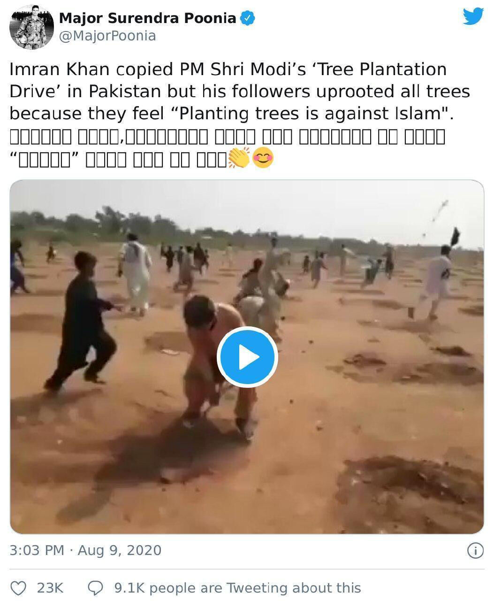
Voice For İndia isimli hesap tarafından viral hale getirilen iddia, Türkiye'de de birçok haber sitesinde İslamafobik ifadelerle birlikte yer adı.

(Kaynak: Caption, 2021,11 Ağustos)
Videonun kaydedildiği yer ve zamandan emin olmak adına videodan seçilen birkaç belirgin kesit tersine görsel arama için kullanılabilir. Bu arama bizi videoya yer veren Pakistan merkezli haber sitelerine ulaştırıyor. Örneğin Khabarnaamaa adlı haber sitesi, ağaçların Khyber’in Bara Mandi bölgesinde protesto amacıyla söküldüğünden bahsediyor.
Habere göre hükümet tarafından başlatılan “10 Milyar Ağaç Tsunamisi” isimli ağaçlandırma kampanyasında ağaçlar ihtilaflı araziye dikilmiş ve taraflardan izin alınmamıştı. Olaydan sonra hükümet yetkilileri tarafından yapılan açıklamalara da Pakistan Today, Dawn, The News ve Samaa gibi haber sitelerinden ulaşılabiliyor. Ayrıca Hindistan merkezli bir doğrulama platformu olan Boomlive gibi diğer doğrulama platformları tarafından yapılan araştırmalara da anahtar kelime aramalarıyla ulaşılabiliyor.
Video gerçek olsa da, videodakilerin ağaçları ağaç dikmek günah olduğu için söktüğü iddiası yanlış. Bağlamı anlamak için çaba sarf etmek, doğrulama için uygun araçları bilmek kadar önemli. Basit bir anahtar kelime araması, yanlış bilginin yayılmasını engelleyebilir (Teyit, 2020, 12 Ağustos).
Vaka Çalışması 2: Videonun Doğu Türkistanlı bir çocuğun pazarda satıldığını gösterdiği iddiası
Çin’in Doğu Türkistan politikası ve Uygurlara sistematik olarak zulmedildiği iddiaları sık sık gündeme geliyor. Sosyal medyada yayınlanan bir videonun, Çin Komünist Partisi'nin ailesi tutsak Doğu Türkistanlı bir çocuğu pazarda sattığını gösterdiği iddia edildi. Görüntüler farklı dillerde de paylaşıldı.
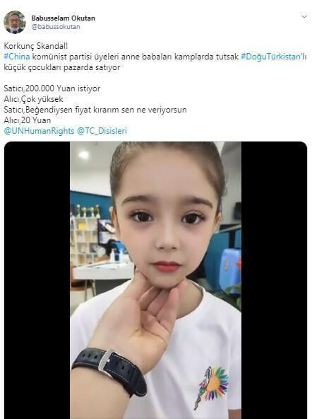
Uygurlar Çin’in kuzey batısındaki Sincan Uygur Özerk Bölgesi’ndeki en büyük azınlık grup. Uzun süredir Uygur nüfusuna karşı soykırıma varan baskılar uyguladığı iddia edilen Çin tüm bu iddiaları reddederken giderek bu belirsizliğin etrafında şekillenen iddiaların sayısı da artıyor. İddia konusu video özelindeki tersine görsel arama, iddianın Arapça ve Japonca gibi dillerde de yayıldığını gösteriyor.
İddiaya gelen yorumlar ipucu barındırıyor olabilir
Videoda iki erkek arasındaki Çince bir konuşma duyuluyor. Ayrıca, videodaki çocuk iç mekanda olsa da, arka plandaki seslerden konuşmanın dış mekanda kaydedilmiş olabileceği anlaşılıyor. İddia bu konuşmanın görüntülerdeki kız çocuğu hakkındaki bir pazarlıktan olduğu yönünde. Japonca iddia paylaşımlarının altındaki yorumlardan birinde aynı sese fakat farklı görüntüye sahip bir video paylaşıldığı görülüyor. Üstelik bu kez görüntü ve ses de uyumlu.
Yorumdaki videonun köşesinde görülen TikTok logosu ve kullanıcı numarası, videonun Çin’de kullanılan TikTok yani ‘Douyin’de paylaşıldığını gösteriyor.
Video “v15366798929” kodlu kullanıcı tarafından paylaşılmış. Yandex’in görsel arama motorunun yardımıyla videodaki metin tercüme edilebiliyor. Çince “你敢讲我就敢麦” yazıyor: “Eğer konuşmaya cesaret edersen, buğday yemeye cüret ederim.” Ayrıca videoya eklenen altyazıda da konuşulanları görmek mümkün. Google Lens kullanılarak çevrilen altyazıda, bir ürünün fiyatı ve genel olarak ürünle ilgili konuşmalar yapıldığı anlaşılıyor.
Videolardaki seslerin birbiriyle aynı olduğundan emin olmak için ise Audacity ses düzenleme programından yararlanıyoruz. Twitter’da aynı ses kullanılarak paylaşılmış farklı videolar bulmak da mümkün.
(Kırmızı renkle işaretlenmiş alan orijinal videodaki ses dalgalarını, yeşil renkle işaretlenmiş alan ise iddia videosundaki ses dalgalarını gösteriyor.)
Videodaki çocukla ilgili bilgilere de paylaşımlara yapılan yorumlar sayesinde erişilebiliyor. Bazı Japonca paylaşımlarda çocuğun Guangdong’da modellik için eğitim aldığı, kızın babasının hesabında kıza ait farklı fotoğraflar da olduğu belirtilmiş. İddia videosudaki görüntülerin okulda çekilmiş olabileceğine dair ipuçları da var: Arkadan geçen, aynı logoya sahip tişört giymiş bir başka çocuk ve kupalar gibi.
Çin’le ilişkili iddiaları araştırırken dil bariyerinin ve kültürel farklılıkların üstesinden gelmeye yardımcı olabilecek araçları akılda tutmak önemli (Teyit, 2020, 22 Ekim).
Alıştırmalar
Alıştırma 1
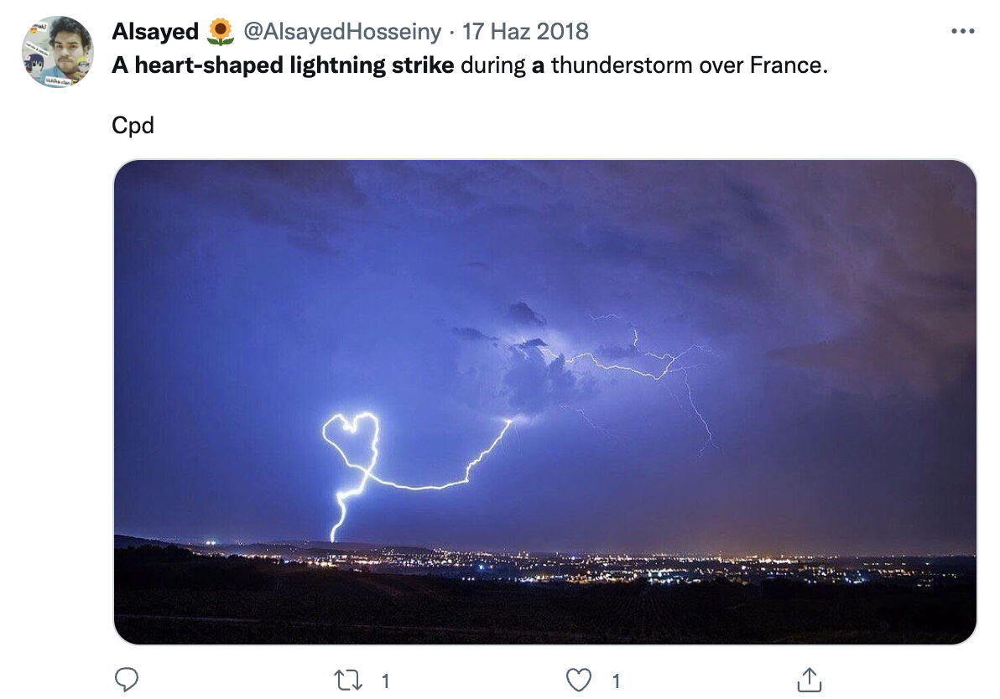
İddia: Fotoğrafın Fransa'da gökyüzünde kalp şeklinde şimşek çaktığını gösterdiği iddiası.
İddia Linki: https://archive.is/kQKTe
Alıştırma 1 Doğrulama Notu:
İkinci soruyu yanıtlamak için yapmış olduğunuz doğruluk kontrolü neticesinde “Doğru” yanıtını işaretlemiş olmalısınız. Doğruluk kontrolü için şu adımlar uygulanabilir:
- Tersine görsel arama fotoğrafın Reddit ve 9gag paylaşımlarına ulaşmayı sağlıyor. Bu sitelerdeki paylaşımlarda fotoğrafın sağında “jeanyvesvilla.com” ifadesi görülebiliyor.
- jeanyvesvilla.com adresi şu anda ulaşılabilir değil ancak Jean Yves Villa ismi ile arama yapıldığında fotoğraf sanatçısının Facebook sayfasına ulaşılabiliyor.
- Facebook sayfasındaki şimşek fotoğrafları arasında iddia fotoğrafını bulmak mümkün.
- Bu paylaşımın açıklamasında fotoğrafın 31 Temmuz 2016’da, Avignon yakınlarındaki Sorgues şehrinde Jean-Yves Villa tarafından çekildiği belirtilmiş.
Alıştırma 2
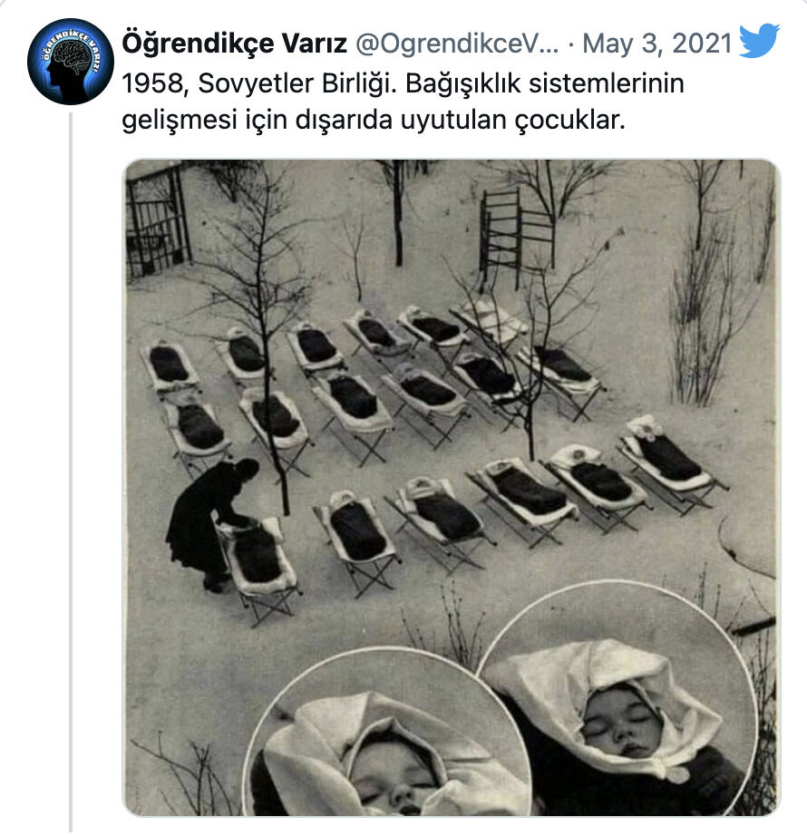
İddia: Sovyetler Birliğinde bağışıklık sistemlerinin gelişmesi için dışarıda uyutulan bebeklere ait olduğu iddia edilen fotoğraf
İddia linki: https://archive.is/IHuly
Alıştırma 2 Doğrulama Notu:
İkinci soruyu yanıtlamak için yapmış olduğunuz doğruluk kontrolü neticesinde “Doğru” yanıtını işaretlemiş olmalısınız. Doğruluk kontrolü için şu adımlar uygulanabilir:
- Tersine görsel arama görselin kullanıldığı çeşitli paylaşımlara erişmemizi sağlıyor. Bunların arasındaki bir internet sitesinde fotoğrafın altında “Çocuklar 1958'de Moskova'daki doğum hastanesinde öğle yemeğinden sonra dışarıda uyuyorlar” açıklaması görülebiliyor.
(Aynı fotoğrafın bazı farklı versiyonlarının altında Kiril alfabesi ile yazılmış bir not görülüyor. Not Yandex görsel aramanın görsellerdeki yazıları metin haline getirebilme özelliği kullanılarak tercüme edilebilir) - “soviet”, “baby”, “outside” gibi anahtar kelime aramaları Russia Beyond isimli, seyahat, eğitim, dil ve Rusya kültürü hakkında içerikler üreten internet sitesine erişmemizi sağlıyor. “Why did kids sleep in the freezing cold in Soviet kindergartens?” (Sovyet anaokullarında çocuklar neden dondurucu soğukta uyudu?) başlıklı yazı iddia fotoğrafı ve benzerlerinin hikayesini ve arkalarındaki kültürel alışkanlığı açıklıyor.
- İddia görselinde kaynak olarak “Dmitry Baltermants/MAMM/MDF” notu yer alıyor. Dimitry Balternants Sovyet fotomuhabir. “MAMM/MDF” ise Multimedya Sanat Müzesi, Moskova’nın (Multimedia Art Museum, Moscow) kısaltması. Fotoğrafın müze ile iletişime geçilerek de tekrar teyit edilebilir.
Alıştırma 3
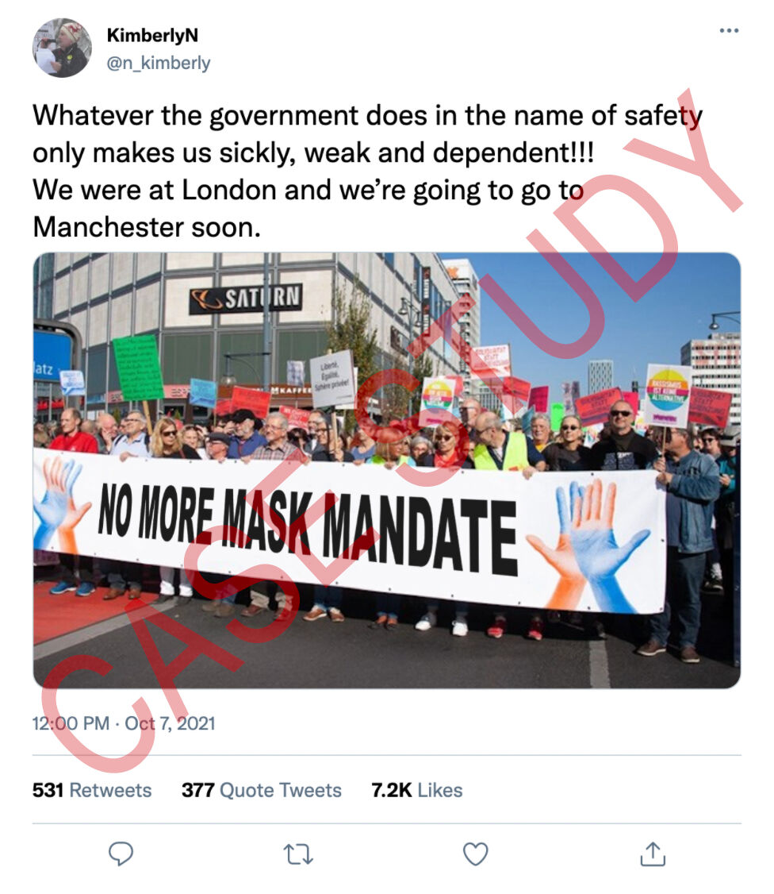
(Tweet: “Hükümetin güvenlik adı altında yaptıkları bizi yalnızca daha hasta, zayıf ve bağımlı hale getiriyor. Londra’daydık ve yakında Manchester’a gideceğiz!”. Pankart: “Maske zorunluluğuna hayır”)
İddia: Fotoğrafın Londra’daki maske karşıtı mitingi gösterdiği iddiası.
Alıştırma 3 Doğrulama Notu:
İkinci soruyu yanıtlamak için yapmış olduğunuz doğruluk kontrolü neticesinde “Yanlış” yanıtını işaretlemiş olmalısınız. Doğruluk kontrolü için şu adımlar uygulanabilir:
- Fotoğrafın Londra’dan olup olmadığını doğrulamak için işe yarayabilecek ipuçları: (1) Fotoğrafın sol köşesindeki tabelada “..latz” yazıyor. Lokasyon tespiti için kullanılabilir. (2) İnsanların ellerinde tuttukları diğer kartların üzerinde yazanlar tam anlaşılmasa da İngilizce olmadığından şüphelenebileceğimiz kelimeler var.
- Fotoğrafı tersine görsel arama yöntemi ile aradığımızda pankartın yanlarındaki işaretlerin ait olduğu hareketin sitesine ulaşabiliyoruz. Sitede fotoğrafın orjinaline ulaşılabiliyor. Orjinal fotoğrafta yer alan Alexanderplatz metro tabelasından fotoğrafın Berlin’de yapılan bir buluşmadan olduğu anlaşılıyor. Orjinal pankartta “#bölünmez- Dışlama yerine dayanışma” anlamına gelen “#unteilbar - Solidarität statt ausgrenzung” yazıyor.
- Google Maps üzerinden Alexanderplatz metro çıkışlarının olduğu sokak görünümleri incelenerek fotoğrafın çekildiği noktaya da ulaşılabilir.
Fotoğraf 13 Ekim 2018’de Berlin’de farklı bir eylemde çekilmiş. Dolayısıyla, iddianın “Yanlış” olduğunu anlıyoruz.
Test
Kaynakça
Barot, T. (t.y.). Verifying images. C. Silverman (Ed.), Verification handbook: An ultimate guideline on digital age sourcing for emergency coverage (s. 35-41) içinde.
Bot Sentinel. (2021). About.
Browne, M. (t.y.). Verifying video. C. Silverman (Ed.), Verification handbook: An ultimate guideline on digital age sourcing for emergency coverage (s. 47-53) içinde.
Buttry, S. (t.y.). Verification fundamentals: Rules to live by. C. Silverman (Ed.), Verification handbook: An ultimate guideline on digital age sourcing for emergency coverage (s. 15-18) içinde.
DFRLab. (2018, 9 Ekim). #TrollTracker: Bots, botnets, and trolls. Medium.
Graham, M. (2021, 5 Mayıs). Tips for using the Internet Archive’s Wayback Machine in your next investigation. Global Investigative Journalism Network.
Gregory, S. (2020). How to think about deepfakes and emerging manipulation technologies. C. Silverman (Ed.), Verification handbook: For disinformation and media manipulation içinde. European Journalism Centre.
Higgins, E. (2015, 25 Temmuz). Searching the Earth: Essential geolocation tools for verification. Bellingcat.
IFLA. (2017). How to spot fake news.
Instagram help center. (2021). Verified badges.
Kiely, E. ve Robertson, L. (2016). How to spot fake news. FactCheck.org.
Lewandowsky, S., Cook, J., Ecker, U. K. H., Albarracín, D., Amazeen, M. A., Kendeou, P. … Zaragoza, M. S. (2020). The Debunking Handbook 2020. doi:10.17910/b7.1182
Lytvynenko, J. (2020). Monitoring for fakes and information operations during breaking news. C. Silverman (Ed.), Verification handbook: For disinformation and media manipulation içinde. European Journalism Centre.
Mantzarlis, A. (2018). Module 5: Fact-checking 101. In C. Ireton and J. Posetti (Ed.), Journalism, fake news & disinformation: Handbook for journalism education and training (s. 81-95) içinde. France: UNESCO.
Mantzarlis, A. (2015, 21 Ekim). Will verification kill fact-checking?. Poynter.
Marconi, F., ve Daldrup, T. (2018, 15 Kasım). How The Wall Street Journal is preparing its journalists to detect deepfakes. NiemanLab.
Metz, C. (2017, 4 Kasım). Google's dueling neural networks ppar to get smarter, no humans required. Wired.
News Literacy Project. (2021). Don’t get fooled: 7 simple steps.
Sánchez, A. I. (2015, 22 Temmuz). Atacan bots hashtag #SobrinaEPN [Video ]. YouTube.
Schwartz, O. (2018, 12 Kasım). You thought fake news was bad? Deep fakes are where truth goes to die. The Guardian.
Silverman, C. (2020a). Investigating websites. C. Silverman (Ed.), Verification handbook: For disinformation and media manipulation içinde. European Journalism Centre.
Silverman, C. (2020b). Verification and fact checking. C. Silverman (Ed.), Verification handbook: For disinformation and media manipulation içinde. European Journalism Centre.
Silverman, C. ve Spray, S. (2017, 29 Mayıs). Trolls are targeting Indian restaurants with a create-your-own fake news site. Buzzfeed.
Silverman, C. ve Tsubaki, R. (t.y.). Creating a verification process and checklist(s). In C. Silverman (Ed.), Verification handbook: An ultimate guideline on digital age sourcing for emergency coverage (s. 97-103) içinde.
Teyit. (2021, 4 Ağustos). Vaka çalışması: #HelpTurkey etiketinin hikayesi. Teyit.
Teyit. (2021, 3 Ağustos). A Haber’in referans verdiği raporun Türkiye’nin yangına müdaheledeki başarısını gösterdiği iddiası. Teyit.
Teyit. (2021, 25 Ocak). Bozuk asfalt yol görüntülerinin İstanbul’dan olduğu iddiası. Teyit.
Teyit. (2020, 18 Kasım). Fotoğrafın Uğur Şahin ile ailesini gösterdiği iddiası. Teyit.
Teyit. (2020, 22 Ekim). Videonun Doğu Türkistanlı bir çocuğun pazarda satıldığını gösterdiği iddiası. Teyit.
Teyit. (2020, 12 Ağustos). Videonun Pakistan’da ‘İslam’da haramdır’ diye ağaç söküldüğünü gösterdiği iddiası. Teyit.
Teyit. (2020, 1 Haziran). Fotoğrafın Dimetoka’daki camiye Yunanistan bayrağı asıldığını gösterdiği iddiası. Teyit.
The Center for Information Technology and Society. (t.y.). How is fake news spread? Bots, people like you, trolls, and microtargeting.
Toler, A. (2019, 26 Aralık). Guide to using reverse image search for investigations. In Bellingcat.
Trewinnard, T. (2016, 11 Şubat). Sockpuppets and spambots: How states manipulate social networks. First Draft.
Twitter help center. (2021). About verified accounts.
Urbani, S. (2019). Verifying online information. First Draft.
Verification handbook. (t.y.). Verification tools: verifying identity.
Vis, F., Faulkner, S. ve Guy, H. (2020). Verifying and questioning images. C. Silverman (Ed.), Verification handbook: For disinformation and media manipulation içinde. European Journalism Centre.
Vosoughi, S., Roy, D. ve Aral, S. (2018). The spread of true and false news online. Science, 359, 1146-1151. doi: 10.1126/science.aap9559
Wardle, C. (t.y.). Verifying user-generated content. In C. Silverman (Ed.), Verification handbook: An ultimate guideline on digital age sourcing for emergency coverage (s. 25-32) içinde.
Wild, J. ve Godart, C. (2020). Spotting bots, cyborgs and inauthentic activity. C. Silverman (Ed.), Verification handbook: For disinformation and media manipulation içinde. European Journalism Centre.
Zadrozny, B. (2020). Investigating social media accounts. C. Silverman (Ed.), Verification handbook: For disinformation and media manipulation içinde. European Journalism Centre.
Önerilen Kaynaklar
Bellingcat’s online investigation toolkit. (2021, 11 Ekim). [version 6.8].
Bielska, A., Kurz, N. R., Baumgartner, Y., ve Benetis, V. (2020). Open source intelligence tools and resources handbook. I-INTELLIGENCE.
Fiorella, G. (2019). A beginner’s guide to flight tracking. Bellingcat.
Full Fact. (2020, 9 Ekim). How to spot misleading images online.
Google search help. (2021). Search with an image on Google.
IFCN Poynter. (t.y.). A 5-point guide to Bellingcat’s digital forensics tool list.
Joseph, R. (2021, 24 Ağustos). Four quick ways to verify images on a smartphone. Global Investigative Journalism Network: Tools and techniques.
Patin, N. (2019). Bellingcat’s invitation is waiting for your response: An investigative guide to LinkedIn. Bellingcat.
Silverman, C. (Ed.). (2020). Verification handbook for investigative reporting.
Skowronski, J. (2019, 30 Temmuz). Identifying trolls and bots on Reddit with machine learning (Part 2). Towards data science.
The Clemson University Media Forensics Hub. (t.y.). Spot the troll [game].
Twitter help center. (2021). How to use advanced search.
Önerilen Videolar
First Draft. (2021, 15 Haziran). How to check photos online using a reverse image search on your phone: Training.
First Draft. (2020, 29 Mayıs). How to use your phone to find out where a photo or video was taken: Training.
First Draft. (2020, 29 Mayıs). How to quickly verify social profiles on your phone: Training video with Laura Garcia.
First Draft. (2020, 24 Haziran). How to verify imposter social media accounts using your mobile phone #Mojo: Training.